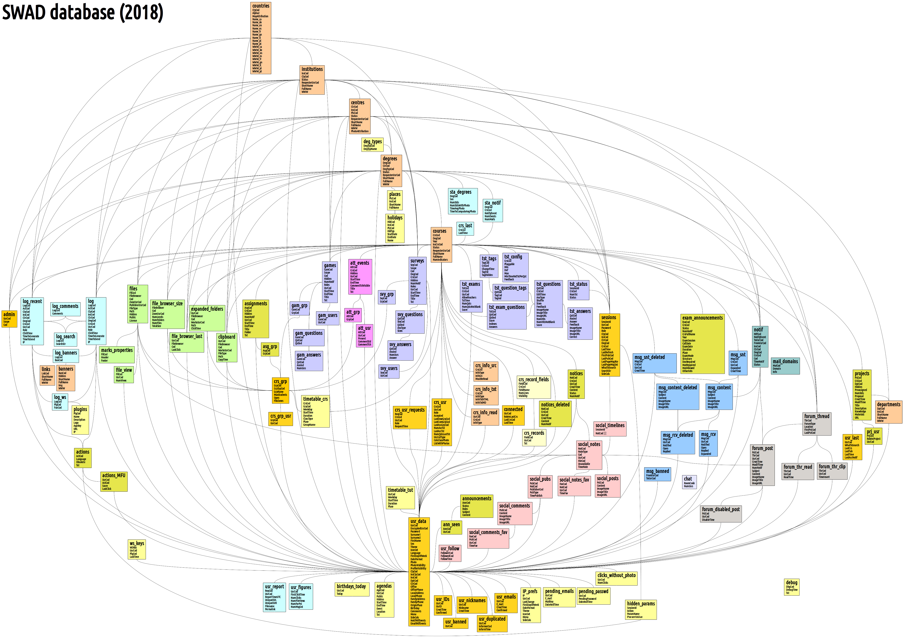

|
social workspace at a distance |
SWAD database Antonio Cañas Vargas, 1999-2024
Antonio Cañas Vargas, 1999-2024
|
DatabaseSWAD uses the database management system MySQL to store the most part of the data, although certain elements are managed directly in XML files. Tables There are 152 tables in SWAD: mysql> SHOW TABLES; +--------------------------+ | Tables_in_swad | +--------------------------+ | act_frequent | | agd_agendas | | ann_announcements | | ann_seen | | api_keys | | asg_assignments | | asg_groups | | att_events | | att_groups | | att_users | | ban_banners | | bld_buildings | | brw_caches | | brw_clipboards | | brw_expanded | | brw_files | | brw_last | | brw_sizes | | brw_views | | cfe_exams | | cht_rooms | | crs_courses | | crs_info_read | | crs_info_src | | crs_info_txt | | crs_last | | crs_record_fields | | crs_records | | crs_requests | | crs_user_settings | | crs_users | | ctr_centers | | cty_countrs | | dbg_debug | | deg_degrees | | deg_types | | dpt_departments | | exa_exams | | exa_groups | | exa_log | | exa_log_sessions | | exa_log_user_agents | | exa_print_questions | | exa_prints | | exa_sessions | | exa_set_answers | | exa_set_questions | | exa_sets | | fig_figures | | fir_banned | | fir_log | | for_clipboards | | for_disabled | | for_posts | | for_read | | for_threads | | gam_games | | gam_questions | | grp_groups | | grp_types | | grp_users | | hld_holidays | | ins_instits | | lnk_links | | log | | log_api | | log_banners | | log_comments | | log_recent | | log_search | | mch_answers | | mch_groups | | mch_indexes | | mch_matches | | mch_players | | mch_playing | | mch_results | | mch_times | | med_media | | mrk_marks | | msg_banned | | msg_content | | msg_content_deleted | | msg_rcv | | msg_rcv_deleted | | msg_snt | | msg_snt_deleted | | not_deleted | | not_notices | | ntf_mail_domains | | ntf_notifications | | plc_places | | plg_plugins | | prg_expanded | | prg_items | | prg_resources | | prj_config | | prj_projects | | prj_rubrics | | prj_users | | roo_check_in | | roo_macs | | roo_rooms | | rsc_clipboards | | rub_criteria | | rub_rubrics | | rub_scores | | ses_params | | ses_sessions | | set_ip_settings | | sta_degrees | | sta_notifications | | svy_answers | | svy_comments | | svy_groups | | svy_questions | | svy_surveys | | svy_users | | tml_comments | | tml_comments_fav | | tml_notes | | tml_notes_fav | | tml_posts | | tml_pubs | | tml_timelines | | tmt_courses | | tmt_tutoring | | tst_answers | | tst_config | | tst_exam_questions | | tst_exams | | tst_question_tags | | tst_questions | | tst_tags | | usr_admins | | usr_banned | | usr_birthdays_today | | usr_clicks_without_photo | | usr_clipboards | | usr_connected | | usr_data | | usr_duplicated | | usr_emails | | usr_figures | | usr_follow | | usr_ids | | usr_last | | usr_nicknames | | usr_pending_emails | | usr_pending_passwd | | usr_reports | | usr_webs | +--------------------------+ 152 rows in set (0,00 sec) Table act_frequentStores the recent actions more frequently made by each user: mysql> DESCRIBE act_frequent; +-----------+----------+------+-----+---------+-------+ | Field | Type | Null | Key | Default | Extra | +-----------+----------+------+-----+---------+-------+ | UsrCod | int(11) | NO | PRI | NULL | | | ActCod | int(11) | NO | PRI | NULL | | | Score | float | NO | | NULL | | | LastClick | datetime | NO | | NULL | | +-----------+----------+------+-----+---------+-------+ 4 rows in set (0,00 sec) Table agd_agendasStores users' agendas:
mysql> DESCRIBE agd_agendas;
+-----------+---------------+------+-----+---------+----------------+
| Field | Type | Null | Key | Default | Extra |
+-----------+---------------+------+-----+---------+----------------+
| AgdCod | int(11) | NO | PRI | NULL | auto_increment |
| UsrCod | int(11) | NO | MUL | NULL | |
| Public | enum('N','Y') | NO | | N | |
| Hidden | enum('N','Y') | NO | | N | |
| StartTime | datetime | NO | | NULL | |
| EndTime | datetime | NO | | NULL | |
| Event | varchar(2047) | NO | | NULL | |
| Location | varchar(2047) | NO | | NULL | |
| Txt | text | NO | | NULL | |
+-----------+---------------+------+-----+---------+----------------+
9 rows in set (0,00 sec)
Table ann_announcementsStores the global announcements: mysql> DESCRIBE ann_announcements; +---------+------------+------+-----+---------+----------------+ | Field | Type | Null | Key | Default | Extra | +---------+------------+------+-----+---------+----------------+ | AnnCod | int(11) | NO | PRI | NULL | auto_increment | | Status | tinyint(4) | NO | MUL | 0 | | | Roles | int(11) | NO | | 0 | | | Subject | text | NO | | NULL | | | Content | text | NO | | NULL | | +---------+------------+------+-----+---------+----------------+ 5 rows in set (0,00 sec) Table ann_seenStores the users who have seen global announcements: mysql> DESCRIBE ann_seen; +--------+---------+------+-----+---------+-------+ | Field | Type | Null | Key | Default | Extra | +--------+---------+------+-----+---------+-------+ | AnnCod | int(11) | NO | PRI | NULL | | | UsrCod | int(11) | NO | PRI | NULL | | +--------+---------+------+-----+---------+-------+ 2 rows in set (0,00 sec) Table api_keysStores the keys used in API / web service: mysql> DESCRIBE api_keys; +----------+----------+------+-----+---------+-------+ | Field | Type | Null | Key | Default | Extra | +----------+----------+------+-----+---------+-------+ | WSKey | char(43) | NO | PRI | NULL | | | UsrCod | int(11) | NO | MUL | NULL | | | PlgCod | int(11) | NO | MUL | NULL | | | LastTime | datetime | NO | MUL | NULL | | +----------+----------+------+-----+---------+-------+ 4 rows in set (0,00 sec) Table asg_assignmentsStores the assignments proposed by the teachers to their students:
mysql> DESCRIBE asg_assignments;
+-----------+----------------+------+-----+---------+----------------+
| Field | Type | Null | Key | Default | Extra |
+-----------+----------------+------+-----+---------+----------------+
| AsgCod | int(11) | NO | PRI | NULL | auto_increment |
| CrsCod | int(11) | NO | MUL | -1 | |
| Hidden | enum('N','Y') | NO | | N | |
| NumNotif | int(11) | NO | | 0 | |
| UsrCod | int(11) | NO | | NULL | |
| StartTime | datetime | NO | | NULL | |
| EndTime | datetime | NO | | NULL | |
| Title | varchar(2047) | NO | | NULL | |
| Folder | varbinary(255) | NO | | NULL | |
| Txt | text | NO | | NULL | |
+-----------+----------------+------+-----+---------+----------------+
10 rows in set (0,00 sec)
Table asg_groupsStores the groups associated to assigments: mysql> DESCRIBE asg_groups; +--------+---------+------+-----+---------+-------+ | Field | Type | Null | Key | Default | Extra | +--------+---------+------+-----+---------+-------+ | AsgCod | int(11) | NO | PRI | NULL | | | GrpCod | int(11) | NO | PRI | NULL | | +--------+---------+------+-----+---------+-------+ 2 rows in set (0,00 sec) Table att_eventsStores events used to control attendance:
mysql> DESCRIBE att_events;
+-------------------+---------------+------+-----+---------+----------------+
| Field | Type | Null | Key | Default | Extra |
+-------------------+---------------+------+-----+---------+----------------+
| AttCod | int(11) | NO | PRI | NULL | auto_increment |
| CrsCod | int(11) | NO | MUL | -1 | |
| Hidden | enum('N','Y') | NO | | N | |
| UsrCod | int(11) | NO | | NULL | |
| StartTime | datetime | NO | | NULL | |
| EndTime | datetime | NO | | NULL | |
| CommentTchVisible | enum('N','Y') | NO | | N | |
| Title | varchar(2047) | NO | | NULL | |
| Txt | text | NO | | NULL | |
+-------------------+---------------+------+-----+---------+----------------+
9 rows in set (0,00 sec)
Table att_groupsStores groups associated to control attendance: mysql> DESCRIBE att_groups; +--------+---------+------+-----+---------+-------+ | Field | Type | Null | Key | Default | Extra | +--------+---------+------+-----+---------+-------+ | AttCod | int(11) | NO | PRI | NULL | | | GrpCod | int(11) | NO | PRI | NULL | | +--------+---------+------+-----+---------+-------+ 2 rows in set (0.00 sec) Table att_usersStores users who have attended to events:
mysql> DESCRIBE att_users;
+------------+---------------+------+-----+---------+-------+
| Field | Type | Null | Key | Default | Extra |
+------------+---------------+------+-----+---------+-------+
| AttCod | int(11) | NO | PRI | NULL | |
| UsrCod | int(11) | NO | PRI | NULL | |
| Present | enum('N','Y') | NO | | Y | |
| CommentStd | text | NO | | NULL | |
| CommentTch | text | NO | | NULL | |
+------------+---------------+------+-----+---------+-------+
5 rows in set (0,00 sec)
Table bld_buildingsStores buildings in a center: mysql> DESCRIBE bld_buildings; +-----------+---------------+------+-----+---------+----------------+ | Field | Type | Null | Key | Default | Extra | +-----------+---------------+------+-----+---------+----------------+ | BldCod | int | NO | PRI | NULL | auto_increment | | CtrCod | int | NO | MUL | NULL | | | ShortName | varchar(511) | NO | | NULL | | | FullName | varchar(2047) | NO | | NULL | | | Location | varchar(2047) | NO | | NULL | | +-----------+---------------+------+-----+---------+----------------+ 5 rows in set (0.00 sec) Table brw_cachesStores the media private paths linked from public directories in current session : mysql> DESCRIBE brw_caches; +-----------+----------+------+-----+---------+-------+ | Field | Type | Null | Key | Default | Extra | +-----------+----------+------+-----+---------+-------+ | SessionId | char(43) | NO | MUL | NULL | | | PrivPath | text | NO | | NULL | | | TmpPubDir | text | NO | | NULL | | +-----------+----------+------+-----+---------+-------+ 3 rows in set (0.00 sec) Table brw_clipboardsStores clipboards (paths used to copy-paste folders and files): mysql> DESCRIBE brw_clipboards; +-------------+------------+------+-----+-------------------+-----------------------------+ | Field | Type | Null | Key | Default | Extra | +-------------+------------+------+-----+-------------------+-----------------------------+ | UsrCod | int(11) | NO | PRI | NULL | | | FileBrowser | tinyint(4) | NO | MUL | NULL | | | Cod | int(11) | NO | | -1 | | | WorksUsrCod | int(11) | NO | MUL | NULL | | | FileType | tinyint(4) | NO | | 0 | | | Path | text | NO | | NULL | | | CopyTime | timestamp | NO | | CURRENT_TIMESTAMP | on update CURRENT_TIMESTAMP | +-------------+------------+------+-----+-------------------+-----------------------------+ 7 rows in set (0,00 sec) Table brw_expandedStores the expanded folders for each user: mysql> DESCRIBE brw_expanded; +-------------+------------+------+-----+---------+-------+ | Field | Type | Null | Key | Default | Extra | +-------------+------------+------+-----+---------+-------+ | UsrCod | int(11) | NO | MUL | NULL | | | FileBrowser | tinyint(4) | NO | MUL | NULL | | | Cod | int(11) | NO | | -1 | | | WorksUsrCod | int(11) | NO | MUL | NULL | | | Path | text | NO | | NULL | | | ClickTime | datetime | NO | | NULL | | +-------------+------------+------+-----+---------+-------+ 6 rows in set (0,00 sec) Table brw_filesStores metadata about each file:
mysql> DESCRIBE brw_files;
+-----------------+---------------+------+-----+---------+----------------+
| Field | Type | Null | Key | Default | Extra |
+-----------------+---------------+------+-----+---------+----------------+
| FilCod | int(11) | NO | PRI | NULL | auto_increment |
| FileBrowser | tinyint(4) | NO | MUL | NULL | |
| Cod | int(11) | NO | | -1 | |
| ZoneUsrCod | int(11) | NO | MUL | -1 | |
| PublisherUsrCod | int(11) | NO | MUL | NULL | |
| FileType | tinyint(4) | NO | | 0 | |
| Path | text | NO | | NULL | |
| Hidden | enum('N','Y') | NO | | N | |
| Public | enum('N','Y') | NO | | N | |
| License | tinyint(4) | NO | | 0 | |
+-----------------+---------------+------+-----+---------+----------------+
10 rows in set (0,00 sec)
Table brw_lastStores the last click of every user in each file browser zone: mysql> DESCRIBE brw_last; +-------------+------------+------+-----+---------+-------+ | Field | Type | Null | Key | Default | Extra | +-------------+------------+------+-----+---------+-------+ | UsrCod | int(11) | NO | PRI | NULL | | | FileBrowser | tinyint(4) | NO | PRI | NULL | | | Cod | int(11) | NO | PRI | -1 | | | LastClick | datetime | NO | | NULL | | +-------------+------------+------+-----+---------+-------+ 4 rows in set (0,00 sec) Table brw_sizesStores the sizes of the file zones: mysql> DESCRIBE brw_sizes; +-------------+------------+------+-----+---------+-------+ | Field | Type | Null | Key | Default | Extra | +-------------+------------+------+-----+---------+-------+ | FileBrowser | tinyint(4) | NO | PRI | NULL | | | Cod | int(11) | NO | PRI | -1 | | | ZoneUsrCod | int(11) | NO | PRI | -1 | | | NumLevels | int(11) | NO | | NULL | | | NumFolders | int(11) | NO | | NULL | | | NumFiles | int(11) | NO | | NULL | | | TotalSize | bigint(20) | NO | | NULL | | +-------------+------------+------+-----+---------+-------+ 7 rows in set (0,00 sec) Table brw_viewsStores the number of times each user has seen each file: mysql> DESCRIBE brw_views; +----------+---------+------+-----+---------+-------+ | Field | Type | Null | Key | Default | Extra | +----------+---------+------+-----+---------+-------+ | FilCod | int(11) | NO | PRI | NULL | | | UsrCod | int(11) | NO | PRI | NULL | | | NumViews | int(11) | NO | | 0 | | +----------+---------+------+-----+---------+-------+ 3 rows in set (0,00 sec) Table cfe_examsStores the calls for exams: mysql> DESCRIBE cfe_exams; +-------------+---------------+------+-----+---------+----------------+ | Field | Type | Null | Key | Default | Extra | +-------------+---------------+------+-----+---------+----------------+ | ExaCod | int(11) | NO | PRI | NULL | auto_increment | | CrsCod | int(11) | NO | MUL | -1 | | | Status | tinyint(4) | NO | MUL | 0 | | | NumNotif | int(11) | NO | | 0 | | | CrsFullName | varchar(2047) | NO | | NULL | | | Year | tinyint(4) | NO | | NULL | | | ExamSession | varchar(2047) | NO | | NULL | | | CallDate | datetime | NO | | NULL | | | ExamDate | datetime | NO | | NULL | | | Duration | time | NO | | NULL | | | Place | text | NO | | NULL | | | ExamMode | text | NO | | NULL | | | Structure | text | NO | | NULL | | | DocRequired | text | NO | | NULL | | | MatRequired | text | NO | | NULL | | | MatAllowed | text | NO | | NULL | | | OtherInfo | text | NO | | NULL | | +-------------+---------------+------+-----+---------+----------------+ 17 rows in set (0,00 sec) Table cht_roomsStored number of users in each chat room (this table is not used now): mysql> DESCRIBE cht_rooms; +----------+-------------+------+-----+---------+-------+ | Field | Type | Null | Key | Default | Extra | +----------+-------------+------+-----+---------+-------+ | RoomCode | varchar(16) | NO | PRI | NULL | | | NumUsrs | int(11) | NO | | NULL | | +----------+-------------+------+-----+---------+-------+ 2 rows in set (0,00 sec) Table crs_coursesStores the courses/subjects: mysql> DESCRIBE crs_courses; +-----------------+---------------+------+-----+---------+----------------+ | Field | Type | Null | Key | Default | Extra | +-----------------+---------------+------+-----+---------+----------------+ | CrsCod | int(11) | NO | PRI | NULL | auto_increment | | DegCod | int(11) | NO | MUL | -1 | | | Year | tinyint(4) | NO | | 0 | | | InsCrsCod | char(7) | NO | | NULL | | | Status | tinyint(4) | NO | MUL | 0 | | | RequesterUsrCod | int(11) | NO | | -1 | | | ShortName | varchar(511) | NO | | NULL | | | FullName | varchar(2047) | NO | | NULL | | | NumIndicators | int(11) | NO | | -1 | | +-----------------+---------------+------+-----+---------+----------------+ 9 rows in set (0,00 sec) Table crs_info_readStores the users who have read the information with mandatory reading:
mysql> DESCRIBE crs_info_read;
+----------+--------------------------------------------------------------------------------------------+------+-----+---------+-------+
| Field | Type | Null | Key | Default | Extra |
+----------+--------------------------------------------------------------------------------------------+------+-----+---------+-------+
| UsrCod | int(11) | NO | PRI | NULL | |
| CrsCod | int(11) | NO | PRI | NULL | |
| InfoType | enum('intro','description','theory','practices','bibliography','FAQ','links','assessment') | NO | PRI | NULL | |
+----------+--------------------------------------------------------------------------------------------+------+-----+---------+-------+
3 rows in set (0,00 sec)
Table crs_info_srcStores the sources of information in courses:
mysql> DESCRIBE crs_info_src;
+------------+--------------------------------------------------------------------------------------------+------+-----+---------+-------+
| Field | Type | Null | Key | Default | Extra |
+------------+--------------------------------------------------------------------------------------------+------+-----+---------+-------+
| CrsCod | int(11) | NO | PRI | -1 | |
| InfoType | enum('intro','description','theory','practices','bibliography','FAQ','links','assessment') | NO | PRI | NULL | |
| InfoSrc | enum('none','editor','plain_text','rich_text','page','URL') | NO | | NULL | |
| MustBeRead | enum('N','Y') | NO | | N | |
+------------+--------------------------------------------------------------------------------------------+------+-----+---------+-------+
4 rows in set (0,00 sec)
Table crs_info_txtStores the text content of information in courses:
mysql> DESCRIBE crs_info_txt;
+-------------+--------------------------------------------------------------------------------------------+------+-----+---------+-------+
| Field | Type | Null | Key | Default | Extra |
+-------------+--------------------------------------------------------------------------------------------+------+-----+---------+-------+
| CrsCod | int(11) | NO | PRI | -1 | |
| InfoType | enum('intro','description','theory','practices','bibliography','FAQ','links','assessment') | NO | PRI | NULL | |
| InfoTxtHTML | longtext | NO | | NULL | |
| InfoTxtMD | longtext | NO | | NULL | |
+-------------+--------------------------------------------------------------------------------------------+------+-----+---------+-------+
4 rows in set (0,00 sec)
Table crs_lastStores last access to courses from students or teachers: mysql> DESCRIBE crs_last; +----------+----------+------+-----+---------+-------+ | Field | Type | Null | Key | Default | Extra | +----------+----------+------+-----+---------+-------+ | CrsCod | int(11) | NO | PRI | NULL | | | LastTime | datetime | NO | MUL | NULL | | +----------+----------+------+-----+---------+-------+ 2 rows in set (0,00 sec) Table crs_record_fieldsStores the fields in the course records: mysql> DESCRIBE crs_record_fields; +------------+---------------+------+-----+---------+----------------+ | Field | Type | Null | Key | Default | Extra | +------------+---------------+------+-----+---------+----------------+ | FieldCod | int(11) | NO | PRI | NULL | auto_increment | | CrsCod | int(11) | NO | MUL | -1 | | | FieldName | varchar(2047) | NO | | NULL | | | NumLines | int(11) | NO | | NULL | | | Visibility | tinyint(4) | NO | | NULL | | +------------+---------------+------+-----+---------+----------------+ 5 rows in set (0,00 sec) Table crs_recordsStores the contents of course records: mysql> DESCRIBE crs_records; +----------+---------+------+-----+---------+-------+ | Field | Type | Null | Key | Default | Extra | +----------+---------+------+-----+---------+-------+ | FieldCod | int(11) | NO | PRI | NULL | | | UsrCod | int(11) | NO | PRI | NULL | | | Txt | text | NO | | NULL | | +----------+---------+------+-----+---------+-------+ 3 rows in set (0,00 sec) Table crs_requestsStores requests for enrollment in courses: mysql> DESCRIBE crs_requests; +-------------+------------+------+-----+---------+----------------+ | Field | Type | Null | Key | Default | Extra | +-------------+------------+------+-----+---------+----------------+ | ReqCod | int(11) | NO | PRI | NULL | auto_increment | | CrsCod | int(11) | NO | MUL | -1 | | | UsrCod | int(11) | NO | MUL | NULL | | | Role | tinyint(4) | NO | | 0 | | | RequestTime | datetime | NO | | NULL | | +-------------+------------+------+-----+---------+----------------+ 5 rows in set (0,00 sec) Table crs_user_settingsStores last settings (preferences) of users in courses:
mysql> DESCRIBE crs_user_settings;
+----------------+---------------------------+------+-----+------------+-------+
| Field | Type | Null | Key | Default | Extra |
+----------------+---------------------------+------+-----+------------+-------+
| UsrCod | int | NO | PRI | NULL | |
| CrsCod | int | NO | PRI | NULL | |
| LastDowGrpCod | int | NO | | -1 | |
| LastComGrpCod | int | NO | | -1 | |
| LastAssGrpCod | int | NO | | -1 | |
| NumAccTst | int | NO | | 0 | |
| LastAccTst | datetime | NO | | NULL | |
| NumQstsLastTst | int | NO | | 0 | |
| UsrListType | enum('classphoto','list') | NO | | classphoto | |
| ColsClassPhoto | tinyint | NO | | NULL | |
| ListWithPhotos | enum('N','Y') | NO | | Y | |
+----------------+---------------------------+------+-----+------------+-------+
11 rows in set (0.01 sec)
Table crs_usersStores who users belong to what courses:
mysql> DESCRIBE crs_users;
+----------+---------------+------+-----+---------+-------+
| Field | Type | Null | Key | Default | Extra |
+----------+---------------+------+-----+---------+-------+
| CrsCod | int | NO | PRI | NULL | |
| UsrCod | int | NO | PRI | NULL | |
| Role | tinyint | NO | MUL | 0 | |
| Accepted | enum('N','Y') | NO | | N | |
+----------+---------------+------+-----+---------+-------+
4 rows in set (0.00 sec)
Table ctr_centersStores centers (faculties, schools...): mysql> DESCRIBE ctr_centers; +------------------+---------------+------+-----+---------+----------------+ | Field | Type | Null | Key | Default | Extra | +------------------+---------------+------+-----+---------+----------------+ | CtrCod | int(11) | NO | PRI | NULL | auto_increment | | InsCod | int(11) | NO | MUL | NULL | | | PlcCod | int(11) | NO | MUL | -1 | | | Status | tinyint(4) | NO | MUL | 0 | | | RequesterUsrCod | int(11) | NO | | -1 | | | ShortName | varchar(511) | NO | | NULL | | | FullName | varchar(2047) | NO | | NULL | | | WWW | varchar(255) | NO | | NULL | | | PhotoAttribution | text | NO | | NULL | | +------------------+---------------+------+-----+---------+----------------+ 9 rows in set (0,00 sec) Table cty_countrsStores the countries: mysql> DESCRIBE cty_countrs; +----------------+--------------+------+-----+---------+-------+ | Field | Type | Null | Key | Default | Extra | +----------------+--------------+------+-----+---------+-------+ | CtyCod | int | NO | PRI | NULL | | | Alpha2 | char(2) | NO | UNI | NULL | | | MapAttribution | text | NO | | NULL | | | Name_ca | varchar(767) | NO | MUL | NULL | | | Name_de | varchar(767) | NO | MUL | NULL | | | Name_en | varchar(767) | NO | MUL | NULL | | | Name_es | varchar(767) | NO | MUL | NULL | | | Name_fr | varchar(767) | NO | MUL | NULL | | | Name_gn | varchar(767) | NO | MUL | NULL | | | Name_it | varchar(767) | NO | MUL | NULL | | | Name_pl | varchar(767) | NO | MUL | NULL | | | Name_pt | varchar(767) | NO | MUL | NULL | | | Name_tr | varchar(767) | NO | MUL | NULL | | | WWW_ca | varchar(255) | NO | | NULL | | | WWW_de | varchar(255) | NO | | NULL | | | WWW_en | varchar(255) | NO | | NULL | | | WWW_es | varchar(255) | NO | | NULL | | | WWW_fr | varchar(255) | NO | | NULL | | | WWW_gn | varchar(255) | NO | | NULL | | | WWW_it | varchar(255) | NO | | NULL | | | WWW_pl | varchar(255) | NO | | NULL | | | WWW_pt | varchar(255) | NO | | NULL | | | WWW_tr | varchar(255) | NO | | NULL | | +----------------+--------------+------+-----+---------+-------+ 23 rows in set (0,00 sec) Table dbg_debugUsed for debugging purposes: mysql> DESCRIBE dbg_debug; +-----------+----------+------+-----+---------+----------------+ | Field | Type | Null | Key | Default | Extra | +-----------+----------+------+-----+---------+----------------+ | DbgCod | int(11) | NO | PRI | NULL | auto_increment | | DebugTime | datetime | NO | MUL | NULL | | | Txt | text | NO | | NULL | | +-----------+----------+------+-----+---------+----------------+ 3 rows in set (0,00 sec) Table deg_degreesStores the degrees: mysql> DESCRIBE deg_degrees; +-----------------+---------------+------+-----+---------+----------------+ | Field | Type | Null | Key | Default | Extra | +-----------------+---------------+------+-----+---------+----------------+ | DegCod | int(11) | NO | PRI | NULL | auto_increment | | CtrCod | int(11) | NO | MUL | NULL | | | DegTypCod | int(11) | NO | MUL | NULL | | | Status | tinyint(4) | NO | MUL | 0 | | | RequesterUsrCod | int(11) | NO | | -1 | | | ShortName | varchar(511) | NO | | NULL | | | FullName | varchar(2047) | NO | | NULL | | | WWW | varchar(255) | NO | | NULL | | +-----------------+---------------+------+-----+---------+----------------+ 8 rows in set (0,00 sec) Table deg_typesStores the types of degree: mysql> DESCRIBE deg_types; +------------+--------------+------+-----+---------+----------------+ | Field | Type | Null | Key | Default | Extra | +------------+--------------+------+-----+---------+----------------+ | DegTypCod | int(11) | NO | PRI | NULL | auto_increment | | DegTypName | varchar(511) | NO | | NULL | | +------------+--------------+------+-----+---------+----------------+ 2 rows in set (0,00 sec) Table dpt_departmentsStores the departments: mysql> DESCRIBE dpt_departments; +-----------+---------------+------+-----+---------+----------------+ | Field | Type | Null | Key | Default | Extra | +-----------+---------------+------+-----+---------+----------------+ | DptCod | int(11) | NO | PRI | NULL | auto_increment | | InsCod | int(11) | NO | MUL | NULL | | | ShortName | varchar(511) | NO | | NULL | | | FullName | varchar(2047) | NO | | NULL | | | WWW | varchar(255) | NO | | NULL | | +-----------+---------------+------+-----+---------+----------------+ 5 rows in set (0,00 sec) Table exa_examsStores the exams:
mysql> DESCRIBE exa_exams;
+------------+---------------+------+-----+---------+----------------+
| Field | Type | Null | Key | Default | Extra |
+------------+---------------+------+-----+---------+----------------+
| ExaCod | int | NO | PRI | NULL | auto_increment |
| CrsCod | int | NO | MUL | -1 | |
| Hidden | enum('N','Y') | NO | | N | |
| UsrCod | int | NO | | NULL | |
| MaxGrade | double | NO | | 1 | |
| Visibility | int | NO | | 31 | |
| Title | varchar(2047) | NO | | NULL | |
| Txt | text | NO | | NULL | |
+------------+---------------+------+-----+---------+----------------+
8 rows in set (0.00 sec)
Table exa_groupsStores the groups associated to each session in an exam: mysql> DESCRIBE exa_groups; +--------+------+------+-----+---------+-------+ | Field | Type | Null | Key | Default | Extra | +--------+------+------+-----+---------+-------+ | SesCod | int | NO | PRI | NULL | | | GrpCod | int | NO | PRI | NULL | | +--------+------+------+-----+---------+-------+ 2 rows in set (0.00 sec) Table exa_logStores the access log to exam prints:
mysql> DESCRIBE exa_log;
+-----------+---------------+------+-----+---------+-------+
| Field | Type | Null | Key | Default | Extra |
+-----------+---------------+------+-----+---------+-------+
| LogCod | int | NO | PRI | NULL | |
| PrnCod | int | NO | MUL | NULL | |
| ActCod | int | NO | | NULL | |
| QstInd | int | NO | | -1 | |
| CanAnswer | enum('N','Y') | NO | | N | |
| ClickTime | datetime | NO | MUL | NULL | |
| IP | char(15) | NO | | NULL | |
+-----------+---------------+------+-----+---------+-------+
7 rows in set (0.00 sec)
Table exa_log_sessionsStores stores the session id fields for access log to exam prints: mysql> DESCRIBE exa_log_sessions; +-----------+----------+------+-----+---------+-------+ | Field | Type | Null | Key | Default | Extra | +-----------+----------+------+-----+---------+-------+ | LogCod | int | NO | PRI | NULL | | | PrnCod | int | NO | MUL | NULL | | | SessionId | char(43) | NO | | NULL | | +-----------+----------+------+-----+---------+-------+ 3 rows in set (0.00 sec) Table exa_log_user_agentsStores the user agent fields for access log to exam prints: mysql> DESCRIBE exa_log_user_agents; +-----------+------+------+-----+---------+-------+ | Field | Type | Null | Key | Default | Extra | +-----------+------+------+-----+---------+-------+ | LogCod | int | NO | PRI | NULL | | | PrnCod | int | NO | MUL | NULL | | | UserAgent | text | NO | | NULL | | +-----------+------+------+-----+---------+-------+ 3 rows in set (0.00 sec) Table exa_print_questionsStores the questions and answers in exam prints made by users: mysql> DESCRIBE exa_print_questions; +---------+--------+------+-----+---------+-------+ | Field | Type | Null | Key | Default | Extra | +---------+--------+------+-----+---------+-------+ | PrnCod | int | NO | PRI | NULL | | | QstCod | int | NO | PRI | NULL | | | QstInd | int | NO | | NULL | | | SetCod | int | NO | | NULL | | | Score | double | NO | | 0 | | | Indexes | text | NO | | NULL | | | Answers | text | NO | | NULL | | +---------+--------+------+-----+---------+-------+ 7 rows in set (0.01 sec) Table exa_printsStores stores the exam prints of every exam session:
mysql> DESCRIBE exa_prints;
+-----------------+---------------+------+-----+---------+----------------+
| Field | Type | Null | Key | Default | Extra |
+-----------------+---------------+------+-----+---------+----------------+
| PrnCod | int | NO | PRI | NULL | auto_increment |
| SesCod | int | NO | MUL | NULL | |
| UsrCod | int | NO | | NULL | |
| StartTime | datetime | NO | | NULL | |
| EndTime | datetime | NO | | NULL | |
| NumQsts | int | NO | | 0 | |
| NumQstsNotBlank | int | NO | | 0 | |
| Sent | enum('N','Y') | NO | | N | |
| Score | double | NO | | 0 | |
+-----------------+---------------+------+-----+---------+----------------+
9 rows in set (0.00 sec)
Table exa_sessionsStores the exam sessions:
mysql> DESCRIBE exa_sessions;
+----------------+---------------+------+-----+---------+----------------+
| Field | Type | Null | Key | Default | Extra |
+----------------+---------------+------+-----+---------+----------------+
| SesCod | int | NO | PRI | NULL | auto_increment |
| ExaCod | int | NO | MUL | NULL | |
| Hidden | enum('N','Y') | NO | | N | |
| UsrCod | int | NO | | NULL | |
| StartTime | datetime | NO | | NULL | |
| EndTime | datetime | NO | | NULL | |
| Title | varchar(2047) | NO | | NULL | |
| ShowUsrResults | enum('N','Y') | NO | | N | |
+----------------+---------------+------+-----+---------+----------------+
8 rows in set (0.00 sec)
Table exa_set_answersStores the answers of questions in exam sets:
mysql> DESCRIBE exa_set_answers;
+----------+---------------+------+-----+---------+-------+
| Field | Type | Null | Key | Default | Extra |
+----------+---------------+------+-----+---------+-------+
| QstCod | int | NO | PRI | NULL | |
| AnsInd | tinyint | NO | PRI | NULL | |
| Answer | text | NO | | NULL | |
| Feedback | text | NO | | NULL | |
| MedCod | int | NO | MUL | -1 | |
| Correct | enum('N','Y') | NO | | NULL | |
+----------+---------------+------+-----+---------+-------+
6 rows in set (0.00 sec)
Table exa_set_questionsStores the questions in exam sets:
mysql> DESCRIBE exa_set_questions;
+----------+---------------------------------------------------------------------------+------+-----+---------+----------------+
| Field | Type | Null | Key | Default | Extra |
+----------+---------------------------------------------------------------------------+------+-----+---------+----------------+
| QstCod | int | NO | PRI | NULL | auto_increment |
| SetCod | int | NO | MUL | NULL | |
| Invalid | enum('N','Y') | NO | | N | |
| AnsType | enum('int','float','true_false','unique_choice','multiple_choice','text') | NO | | NULL | |
| Shuffle | enum('N','Y') | NO | | NULL | |
| Stem | text | NO | | NULL | |
| Feedback | text | NO | | NULL | |
| MedCod | int | NO | MUL | -1 | |
+----------+---------------------------------------------------------------------------+------+-----+---------+----------------+
8 rows in set (0.00 sec)
Table exa_setsStores the question sets in the exams: mysql> DESCRIBE exa_sets; +----------------+---------------+------+-----+---------+----------------+ | Field | Type | Null | Key | Default | Extra | +----------------+---------------+------+-----+---------+----------------+ | SetCod | int | NO | PRI | NULL | auto_increment | | ExaCod | int | NO | | NULL | | | SetInd | int | NO | | NULL | | | NumQstsToPrint | int | NO | | 0 | | | Title | varchar(2047) | NO | | NULL | | +----------------+---------------+------+-----+---------+----------------+ 5 rows in set (0.01 sec) Table fig_figuresStores cached figures for quick retrieval of figures (i.e. number of students in the platform):
mysql> DESCRIBE fig_figures;
+-------------+-------------------------------------------+------+-----+-------------------+-----------------------------------------------+
| Field | Type | Null | Key | Default | Extra |
+-------------+-------------------------------------------+------+-----+-------------------+-----------------------------------------------+
| Figure | int | NO | PRI | NULL | |
| Scope | enum('Sys','Cty','Ins','Ctr','Deg','Crs') | NO | PRI | Sys | |
| Cod | int | NO | PRI | -1 | |
| ValueInt | int | NO | | 0 | |
| ValueDouble | double | NO | | 0 | |
| LastUpdate | timestamp | NO | | CURRENT_TIMESTAMP | DEFAULT_GENERATED on update CURRENT_TIMESTAMP |
+-------------+-------------------------------------------+------+-----+-------------------+-----------------------------------------------+
6 rows in set (0.01 sec)
Table fir_bannedStores the banned IPs in order to mitigate denial of service attacks: mysql> DESCRIBE fir_banned; +-----------+----------+------+-----+---------+-------+ | Field | Type | Null | Key | Default | Extra | +-----------+----------+------+-----+---------+-------+ | IP | char(15) | NO | MUL | NULL | | | BanTime | datetime | NO | MUL | NULL | | | UnbanTime | datetime | NO | MUL | NULL | | +-----------+----------+------+-----+---------+-------+ 3 rows in set (0.00 sec) Table fir_logStores the most recent IPs in order to mitigate denial of service attacks: mysql> DESCRIBE fir_log; +-----------+----------+------+-----+---------+-------+ | Field | Type | Null | Key | Default | Extra | +-----------+----------+------+-----+---------+-------+ | ClickTime | datetime | NO | MUL | NULL | | | IP | char(15) | NO | MUL | NULL | | +-----------+----------+------+-----+---------+-------+ 2 rows in set (0.00 sec) Table for_clipboardsStores the clipboards used to move threads from one forum to another: mysql> DESCRIBE for_clipboards; +------------+-----------+------+-----+-------------------+-----------------------------+ | Field | Type | Null | Key | Default | Extra | +------------+-----------+------+-----+-------------------+-----------------------------+ | ThrCod | int(11) | NO | PRI | NULL | | | UsrCod | int(11) | NO | UNI | NULL | | | TimeInsert | timestamp | NO | | CURRENT_TIMESTAMP | on update CURRENT_TIMESTAMP | +------------+-----------+------+-----+-------------------+-----------------------------+ 3 rows in set (0,00 sec) Table for_disabledStores the forum posts that have been disabled: mysql> DESCRIBE for_disabled; +-------------+----------+------+-----+---------+-------+ | Field | Type | Null | Key | Default | Extra | +-------------+----------+------+-----+---------+-------+ | PstCod | int(11) | NO | PRI | NULL | | | UsrCod | int(11) | NO | | NULL | | | DisableTime | datetime | NO | | NULL | | +-------------+----------+------+-----+---------+-------+ 3 rows in set (0,00 sec) Table for_postsStores the forum posts: mysql> DESCRIBE for_posts; +-----------+----------+------+-----+---------+----------------+ | Field | Type | Null | Key | Default | Extra | +-----------+----------+------+-----+---------+----------------+ | PstCod | int | NO | PRI | NULL | auto_increment | | ThrCod | int | NO | MUL | NULL | | | UsrCod | int | NO | MUL | NULL | | | CreatTime | datetime | NO | MUL | NULL | | | ModifTime | datetime | NO | MUL | NULL | | | NumNotif | int | NO | | 0 | | | Subject | text | NO | | NULL | | | Content | longtext | NO | | NULL | | | MedCod | int | NO | MUL | -1 | | +-----------+----------+------+-----+---------+----------------+ 9 rows in set (0.00 sec) Table for_readStores the threads read by each user: mysql> DESCRIBE for_read; +----------+----------+------+-----+---------+-------+ | Field | Type | Null | Key | Default | Extra | +----------+----------+------+-----+---------+-------+ | ThrCod | int(11) | NO | PRI | NULL | | | UsrCod | int(11) | NO | PRI | NULL | | | ReadTime | datetime | NO | | NULL | | +----------+----------+------+-----+---------+-------+ 3 rows in set (0,00 sec) Table for_threadsStores the forum threads: mysql> DESCRIBE for_threads; +-------------+------------+------+-----+---------+----------------+ | Field | Type | Null | Key | Default | Extra | +-------------+------------+------+-----+---------+----------------+ | ThrCod | int(11) | NO | PRI | NULL | auto_increment | | ForumType | tinyint(4) | NO | MUL | NULL | | | Location | int(11) | NO | MUL | -1 | | | FirstPstCod | int(11) | NO | UNI | NULL | | | LastPstCod | int(11) | NO | UNI | NULL | | +-------------+------------+------+-----+---------+----------------+ 5 rows in set (0,00 sec) Table gam_gamesStores the games:
mysql> DESCRIBE gam_games;
+-----------+-------------------------------------------+------+-----+---------+----------------+
| Field | Type | Null | Key | Default | Extra |
+-----------+-------------------------------------------+------+-----+---------+----------------+
| GamCod | int(11) | NO | PRI | NULL | auto_increment |
| Scope | enum('Sys','Cty','Ins','Ctr','Deg','Crs') | NO | MUL | Sys | |
| Cod | int(11) | NO | | -1 | |
| Hidden | enum('N','Y') | NO | | N | |
| NumNotif | int(11) | NO | | 0 | |
| Roles | int(11) | NO | | 0 | |
| UsrCod | int(11) | NO | | NULL | |
| StartTime | datetime | NO | | NULL | |
| EndTime | datetime | NO | | NULL | |
| Title | varchar(2047) | NO | | NULL | |
| Txt | text | NO | | NULL | |
+-----------+-------------------------------------------+------+-----+---------+----------------+
11 rows in set (0,00 sec)
Table gam_questionsStores the questions in the games: mysql> DESCRIBE gam_questions; +--------+---------+------+-----+---------+-------+ | Field | Type | Null | Key | Default | Extra | +--------+---------+------+-----+---------+-------+ | GamCod | int(11) | NO | MUL | NULL | | | QstCod | int(11) | NO | MUL | NULL | | | QstInd | int(11) | NO | | 0 | | +--------+---------+------+-----+---------+-------+ 3 rows in set (0,00 sec) Table grp_groupsStores the groups in courses:
mysql> DESCRIBE grp_groups;
+-------------+---------------+------+-----+---------+----------------+
| Field | Type | Null | Key | Default | Extra |
+-------------+---------------+------+-----+---------+----------------+
| GrpCod | int | NO | PRI | NULL | auto_increment |
| GrpTypCod | int | NO | MUL | NULL | |
| GrpName | varchar(2047) | NO | | NULL | |
| RooCod | int | NO | MUL | -1 | |
| MaxStudents | int | NO | | NULL | |
| Open | enum('N','Y') | NO | | N | |
| FileZones | enum('N','Y') | NO | | N | |
+-------------+---------------+------+-----+---------+----------------+
7 rows in set (0.01 sec)
Table grp_typesStores the types of groups in courses:
mysql> DESCRIBE grp_types;
+--------------+---------------+------+-----+---------+----------------+
| Field | Type | Null | Key | Default | Extra |
+--------------+---------------+------+-----+---------+----------------+
| GrpTypCod | int | NO | PRI | NULL | auto_increment |
| CrsCod | int | NO | MUL | -1 | |
| GrpTypName | varchar(2047) | NO | | NULL | |
| Mandatory | enum('N','Y') | NO | | NULL | |
| Multiple | enum('N','Y') | NO | | NULL | |
| MustBeOpened | enum('N','Y') | NO | | N | |
| OpenTime | datetime | NO | | NULL | |
+--------------+---------------+------+-----+---------+----------------+
7 rows in set (0.01 sec)
Table grp_usersStores the users beloging to each group: mysql> DESCRIBE grp_users; +--------+------+------+-----+---------+-------+ | Field | Type | Null | Key | Default | Extra | +--------+------+------+-----+---------+-------+ | GrpCod | int | NO | PRI | NULL | | | UsrCod | int | NO | PRI | NULL | | +--------+------+------+-----+---------+-------+ 2 rows in set (0.01 sec) Table hld_holidaysStores the holidays in each institution: mysql> DESCRIBE hld_holidays; +-----------+---------------+------+-----+---------+----------------+ | Field | Type | Null | Key | Default | Extra | +-----------+---------------+------+-----+---------+----------------+ | HldCod | int(11) | NO | PRI | NULL | auto_increment | | InsCod | int(11) | NO | MUL | NULL | | | PlcCod | int(11) | NO | MUL | -1 | | | HldTyp | tinyint(4) | NO | | NULL | | | StartDate | date | NO | | NULL | | | EndDate | date | NO | | NULL | | | Name | varchar(2047) | NO | | NULL | | +-----------+---------------+------+-----+---------+----------------+ 7 rows in set (0,00 sec) Table ins_institsStores the institutions (for example, universities): mysql> DESCRIBE ins_instits; +-----------------+---------------+------+-----+---------+----------------+ | Field | Type | Null | Key | Default | Extra | +-----------------+---------------+------+-----+---------+----------------+ | InsCod | int(11) | NO | PRI | NULL | auto_increment | | CtyCod | int(11) | NO | MUL | NULL | | | Status | tinyint(4) | NO | MUL | 0 | | | RequesterUsrCod | int(11) | NO | | -1 | | | ShortName | varchar(511) | NO | | NULL | | | FullName | varchar(2047) | NO | | NULL | | | WWW | varchar(255) | NO | | NULL | | +-----------------+---------------+------+-----+---------+----------------+ 7 rows in set (0,00 sec) Table lnk_linksStores the global institutional links shown on right part of page: mysql> DESCRIBE lnk_links; +-----------+---------------+------+-----+---------+----------------+ | Field | Type | Null | Key | Default | Extra | +-----------+---------------+------+-----+---------+----------------+ | LnkCod | int(11) | NO | PRI | NULL | auto_increment | | ShortName | varchar(511) | NO | | NULL | | | FullName | varchar(2047) | NO | | NULL | | | WWW | varchar(255) | NO | | NULL | | +-----------+---------------+------+-----+---------+----------------+ 4 rows in set (0,00 sec) Table logStores the log of all clicks: mysql> DESCRIBE log; +----------------+------------+------+-----+---------+----------------+ | Field | Type | Null | Key | Default | Extra | +----------------+------------+------+-----+---------+----------------+ | LogCod | int(11) | NO | PRI | NULL | auto_increment | | ActCod | int(11) | NO | MUL | -1 | | | CtyCod | int(11) | NO | MUL | -1 | | | InsCod | int(11) | NO | MUL | -1 | | | CtrCod | int(11) | NO | MUL | -1 | | | DegCod | int(11) | NO | MUL | -1 | | | CrsCod | int(11) | NO | MUL | -1 | | | UsrCod | int(11) | NO | MUL | -1 | | | Role | tinyint(4) | NO | | NULL | | | ClickTime | datetime | NO | MUL | NULL | | | TimeToGenerate | int(11) | NO | | NULL | | | TimeToSend | int(11) | NO | | NULL | | | IP | char(15) | NO | | NULL | | +----------------+------------+------+-----+---------+----------------+ 13 rows in set (0,00 sec) Table log_apiStores the log of calls to API (web service) from plugins: mysql> DESCRIBE log_api; +--------+---------+------+-----+---------+-------+ | Field | Type | Null | Key | Default | Extra | +--------+---------+------+-----+---------+-------+ | LogCod | int(11) | NO | PRI | NULL | | | PlgCod | int(11) | NO | MUL | NULL | | | FunCod | int(11) | NO | MUL | NULL | | +--------+---------+------+-----+---------+-------+ 3 rows in set (0,00 sec) Table log_commentsStores the comments about errors associated to the log: mysql> DESCRIBE log_comments; +----------+---------+------+-----+---------+-------+ | Field | Type | Null | Key | Default | Extra | +----------+---------+------+-----+---------+-------+ | LogCod | int(11) | NO | PRI | NULL | | | Comments | text | NO | | NULL | | +----------+---------+------+-----+---------+-------+ 2 rows in set (0,00 sec) Table log_recentStores the log of the most recent clicks, used to speed up queries related to log: mysql> DESCRIBE log_recent; +----------------+------------+------+-----+---------+-------+ | Field | Type | Null | Key | Default | Extra | +----------------+------------+------+-----+---------+-------+ | LogCod | int(11) | NO | PRI | NULL | | | ActCod | int(11) | NO | MUL | -1 | | | CtyCod | int(11) | NO | MUL | -1 | | | InsCod | int(11) | NO | MUL | -1 | | | CtrCod | int(11) | NO | MUL | -1 | | | DegCod | int(11) | NO | MUL | -1 | | | CrsCod | int(11) | NO | MUL | -1 | | | UsrCod | int(11) | NO | MUL | -1 | | | Role | tinyint(4) | NO | | NULL | | | ClickTime | datetime | NO | MUL | NULL | | | TimeToGenerate | int(11) | NO | | NULL | | | TimeToSend | int(11) | NO | | NULL | | | IP | char(15) | NO | | NULL | | +----------------+------------+------+-----+---------+-------+ 13 rows in set (0,00 sec) Table log_searchStores the log of search strings: mysql> DESCRIBE log_search; +-----------+---------------+------+-----+---------+-------+ | Field | Type | Null | Key | Default | Extra | +-----------+---------------+------+-----+---------+-------+ | LogCod | int(11) | NO | PRI | NULL | | | SearchStr | varchar(2047) | NO | | NULL | | +-----------+---------------+------+-----+---------+-------+ 2 rows in set (0,00 sec) Table mch_answersStores the users' answers to the matches: mysql> DESCRIBE mch_answers; +--------+---------+------+-----+---------+-------+ | Field | Type | Null | Key | Default | Extra | +--------+---------+------+-----+---------+-------+ | MchCod | int | NO | PRI | NULL | | | UsrCod | int | NO | PRI | NULL | | | QstInd | int | NO | PRI | NULL | | | NumOpt | tinyint | NO | | NULL | | | AnsInd | tinyint | NO | | NULL | | +--------+---------+------+-----+---------+-------+ 5 rows in set (0.00 sec) Table mch_groupsStores the groups associated to each match in a game: mysql> DESCRIBE mch_groups; +--------+------+------+-----+---------+-------+ | Field | Type | Null | Key | Default | Extra | +--------+------+------+-----+---------+-------+ | MchCod | int | NO | PRI | NULL | | | GrpCod | int | NO | PRI | NULL | | +--------+------+------+-----+---------+-------+ 2 rows in set (0.00 sec) Table mch_indexesStores the order of answers in a match: mysql> DESCRIBE mch_indexes; +---------+------+------+-----+---------+-------+ | Field | Type | Null | Key | Default | Extra | +---------+------+------+-----+---------+-------+ | MchCod | int | NO | PRI | NULL | | | QstInd | int | NO | PRI | NULL | | | Indexes | text | NO | | NULL | | +---------+------+------+-----+---------+-------+ 3 rows in set (0.00 sec) Table mch_matchesStores the matches (games instances) already played:
mysql> DESCRIBE mch_matches;
+----------------+------------------------------------------------+------+-----+---------+----------------+
| Field | Type | Null | Key | Default | Extra |
+----------------+------------------------------------------------+------+-----+---------+----------------+
| MchCod | int | NO | PRI | NULL | auto_increment |
| GamCod | int | NO | MUL | NULL | |
| UsrCod | int | NO | | NULL | |
| StartTime | datetime | NO | | NULL | |
| EndTime | datetime | NO | | NULL | |
| Title | varchar(2047) | NO | | NULL | |
| QstInd | int | NO | | 0 | |
| QstCod | int | NO | | -1 | |
| Showing | enum('start','stem','answers','results','end') | NO | | start | |
| Countdown | int | NO | | -1 | |
| NumCols | int | NO | | 1 | |
| ShowQstResults | enum('N','Y') | NO | | N | |
| ShowUsrResults | enum('N','Y') | NO | | N | |
+----------------+------------------------------------------------+------+-----+---------+----------------+
13 rows in set (0.00 sec)
Table mch_playersStores the current match players: mysql> DESCRIBE mch_players; +--------+-----------+------+-----+-------------------+-----------------------------------------------+ | Field | Type | Null | Key | Default | Extra | +--------+-----------+------+-----+-------------------+-----------------------------------------------+ | MchCod | int | NO | PRI | NULL | | | UsrCod | int | NO | PRI | NULL | | | TS | timestamp | NO | | CURRENT_TIMESTAMP | DEFAULT_GENERATED on update CURRENT_TIMESTAMP | +--------+-----------+------+-----+-------------------+-----------------------------------------------+ 3 rows in set (0.00 sec) Table mch_playingStores the current matches being played: mysql> DESCRIBE mch_playing; +--------+-----------+------+-----+-------------------+-----------------------------------------------+ | Field | Type | Null | Key | Default | Extra | +--------+-----------+------+-----+-------------------+-----------------------------------------------+ | MchCod | int | NO | PRI | NULL | | | TS | timestamp | NO | | CURRENT_TIMESTAMP | DEFAULT_GENERATED on update CURRENT_TIMESTAMP | +--------+-----------+------+-----+-------------------+-----------------------------------------------+ 2 rows in set (0.00 sec) Table mch_resultsStores match results: mysql> DESCRIBE mch_results; +-----------------+----------+------+-----+---------+-------+ | Field | Type | Null | Key | Default | Extra | +-----------------+----------+------+-----+---------+-------+ | MchCod | int | NO | PRI | NULL | | | UsrCod | int | NO | PRI | NULL | | | StartTime | datetime | NO | | NULL | | | EndTime | datetime | NO | | NULL | | | NumQsts | int | NO | | 0 | | | NumQstsNotBlank | int | NO | | 0 | | | Score | double | NO | | 0 | | +-----------------+----------+------+-----+---------+-------+ 7 rows in set (0.01 sec) Table mch_timesStores the elapsed time in every question in every match played: mysql> DESCRIBE mch_times; +-------------+------+------+-----+----------+-------+ | Field | Type | Null | Key | Default | Extra | +-------------+------+------+-----+----------+-------+ | MchCod | int | NO | PRI | NULL | | | QstInd | int | NO | PRI | NULL | | | ElapsedTime | time | NO | | 00:00:00 | | +-------------+------+------+-----+----------+-------+ 3 rows in set (0.00 sec) Table med_mediaStores information about media (images, videos, YouTube):
mysql> DESCRIBE med_media;
+--------+---------------------------------------------------------------+------+-----+---------+----------------+
| Field | Type | Null | Key | Default | Extra |
+--------+---------------------------------------------------------------+------+-----+---------+----------------+
| MedCod | int(11) | NO | PRI | NULL | auto_increment |
| Type | enum('none','jpg','gif','mp4','webm','ogg','youtube','embed') | NO | MUL | none | |
| Name | varchar(43) | NO | | | |
| URL | varchar(255) | NO | | | |
| Title | varchar(2047) | NO | | | |
+--------+---------------------------------------------------------------+------+-----+---------+----------------+
5 rows in set (0.01 sec)
Table mrk_marksStores information about files of marks: mysql> DESCRIBE mrk_marks; +--------+---------+------+-----+---------+----------------+ | Field | Type | Null | Key | Default | Extra | +--------+---------+------+-----+---------+----------------+ | FilCod | int(11) | NO | PRI | NULL | auto_increment | | Header | int(11) | NO | | NULL | | | Footer | int(11) | NO | | NULL | | +--------+---------+------+-----+---------+----------------+ 3 rows in set (0,00 sec) Table msg_bannedStores the users whose messages are banned (FromUsrCod is a recipien banned from ToUsrCod): mysql> DESCRIBE msg_banned; +------------+---------+------+-----+---------+-------+ | Field | Type | Null | Key | Default | Extra | +------------+---------+------+-----+---------+-------+ | FromUsrCod | int(11) | NO | PRI | NULL | | | ToUsrCod | int(11) | NO | PRI | NULL | | +------------+---------+------+-----+---------+-------+ 2 rows in set (0,00 sec) Table msg_contentStores the content of the sent messages: mysql> DESCRIBE msg_content; +---------+----------+------+-----+---------+----------------+ | Field | Type | Null | Key | Default | Extra | +---------+----------+------+-----+---------+----------------+ | MsgCod | int | NO | PRI | NULL | auto_increment | | Subject | text | NO | MUL | NULL | | | Content | longtext | NO | | NULL | | | MedCod | int | NO | MUL | -1 | | +---------+----------+------+-----+---------+----------------+ 4 rows in set (0.01 sec) Table msg_content_deletedStores the content of the sent messages that have been deleted: mysql> DESCRIBE msg_content_deleted; +---------+----------+------+-----+---------+-------+ | Field | Type | Null | Key | Default | Extra | +---------+----------+------+-----+---------+-------+ | MsgCod | int | NO | PRI | NULL | | | Subject | text | NO | MUL | NULL | | | Content | longtext | NO | | NULL | | | MedCod | int | NO | MUL | -1 | | +---------+----------+------+-----+---------+-------+ 4 rows in set (0.00 sec) Table msg_rcvStores the received messages:
mysql> DESCRIBE msg_rcv;
+----------+---------------+------+-----+---------+-------+
| Field | Type | Null | Key | Default | Extra |
+----------+---------------+------+-----+---------+-------+
| MsgCod | int(11) | NO | PRI | NULL | |
| UsrCod | int(11) | NO | PRI | NULL | |
| Notified | enum('N','Y') | NO | MUL | N | |
| Open | enum('N','Y') | NO | | N | |
| Replied | enum('N','Y') | NO | | N | |
| Expanded | enum('N','Y') | NO | | N | |
+----------+---------------+------+-----+---------+-------+
6 rows in set (0,00 sec)
Table msg_rcv_deletedStores the received messages that have been deleted:
mysql> DESCRIBE msg_rcv_deleted;
+----------+---------------+------+-----+---------+-------+
| Field | Type | Null | Key | Default | Extra |
+----------+---------------+------+-----+---------+-------+
| MsgCod | int(11) | NO | PRI | NULL | |
| UsrCod | int(11) | NO | PRI | NULL | |
| Notified | enum('N','Y') | NO | MUL | N | |
| Open | enum('N','Y') | NO | | N | |
| Replied | enum('N','Y') | NO | | N | |
+----------+---------------+------+-----+---------+-------+
5 rows in set (0,00 sec)
Table msg_sntStores the sent messages:
mysql> DESCRIBE msg_snt;
+-----------+---------------+------+-----+---------+-------+
| Field | Type | Null | Key | Default | Extra |
+-----------+---------------+------+-----+---------+-------+
| MsgCod | int(11) | NO | PRI | NULL | |
| CrsCod | int(11) | NO | MUL | -1 | |
| UsrCod | int(11) | NO | MUL | NULL | |
| Expanded | enum('N','Y') | NO | | N | |
| CreatTime | datetime | NO | | NULL | |
+-----------+---------------+------+-----+---------+-------+
5 rows in set (0,00 sec)
Table msg_snt_deletedStores the sent messages that have been deleted: mysql> DESCRIBE msg_snt_deleted; +-----------+----------+------+-----+---------+-------+ | Field | Type | Null | Key | Default | Extra | +-----------+----------+------+-----+---------+-------+ | MsgCod | int(11) | NO | PRI | NULL | | | CrsCod | int(11) | NO | MUL | -1 | | | UsrCod | int(11) | NO | MUL | NULL | | | CreatTime | datetime | NO | | NULL | | +-----------+----------+------+-----+---------+-------+ 4 rows in set (0,00 sec) Table not_deletedStores the yellow notes (post-it) that have been deleted: mysql> DESCRIBE not_deleted; +-----------+----------+------+-----+---------+-------+ | Field | Type | Null | Key | Default | Extra | +-----------+----------+------+-----+---------+-------+ | NotCod | int(11) | NO | PRI | NULL | | | CrsCod | int(11) | NO | MUL | -1 | | | UsrCod | int(11) | NO | MUL | NULL | | | CreatTime | datetime | NO | MUL | NULL | | | Content | text | NO | | NULL | | | NumNotif | int(11) | NO | | 0 | | +-----------+----------+------+-----+---------+-------+ 6 rows in set (0,00 sec) Table not_noticesStores the yellow notes (post-it): mysql> DESCRIBE not_notices; +-----------+------------+------+-----+---------+----------------+ | Field | Type | Null | Key | Default | Extra | +-----------+------------+------+-----+---------+----------------+ | NotCod | int(11) | NO | PRI | NULL | auto_increment | | CrsCod | int(11) | NO | MUL | -1 | | | UsrCod | int(11) | NO | MUL | NULL | | | CreatTime | datetime | NO | MUL | NULL | | | Content | text | NO | | NULL | | | Status | tinyint(4) | NO | MUL | 0 | | | NumNotif | int(11) | NO | | 0 | | +-----------+------------+------+-----+---------+----------------+ 7 rows in set (0,00 sec) Table ntf_mail_domainsStores e-mail domains to which sending of notifications is allowed: mysql> DESCRIBE ntf_mail_domains; +--------+---------------+------+-----+---------+----------------+ | Field | Type | Null | Key | Default | Extra | +--------+---------------+------+-----+---------+----------------+ | MaiCod | int(11) | NO | PRI | NULL | auto_increment | | Domain | varchar(255) | NO | UNI | NULL | | | Info | varchar(2047) | NO | | NULL | | +--------+---------------+------+-----+---------+----------------+ 3 rows in set (0,00 sec) Table ntf_notificationsStores the notifications of events: mysql> DESCRIBE ntf_notifications; +-------------+------------+------+-----+---------+----------------+ | Field | Type | Null | Key | Default | Extra | +-------------+------------+------+-----+---------+----------------+ | NtfCod | int(11) | NO | PRI | NULL | auto_increment | | NotifyEvent | tinyint(4) | NO | MUL | NULL | | | ToUsrCod | int(11) | NO | MUL | NULL | | | FromUsrCod | int(11) | NO | | NULL | | | InsCod | int(11) | NO | | -1 | | | CtrCod | int(11) | NO | | -1 | | | DegCod | int(11) | NO | | -1 | | | CrsCod | int(11) | NO | | -1 | | | Cod | int(11) | NO | | -1 | | | TimeNotif | datetime | NO | MUL | NULL | | | Status | tinyint(4) | NO | | 0 | | +-------------+------------+------+-----+---------+----------------+ 11 rows in set (0,00 sec) Table plc_placesStores the places associated to each institution, used in holidays: mysql> DESCRIBE plc_places; +-----------+---------------+------+-----+---------+----------------+ | Field | Type | Null | Key | Default | Extra | +-----------+---------------+------+-----+---------+----------------+ | PlcCod | int(11) | NO | PRI | NULL | auto_increment | | InsCod | int(11) | NO | MUL | NULL | | | ShortName | varchar(511) | NO | | NULL | | | FullName | varchar(2047) | NO | | NULL | | +-----------+---------------+------+-----+---------+----------------+ 4 rows in set (0,00 sec) Table plg_pluginsStores the plugins: mysql> DESCRIBE plg_plugins; +-------------+---------------+------+-----+---------+----------------+ | Field | Type | Null | Key | Default | Extra | +-------------+---------------+------+-----+---------+----------------+ | PlgCod | int(11) | NO | PRI | NULL | auto_increment | | Name | varchar(511) | NO | | NULL | | | Description | varchar(2047) | NO | | NULL | | | Logo | varchar(31) | NO | | NULL | | | AppKey | varchar(31) | NO | | NULL | | | URL | varchar(255) | NO | | NULL | | | IP | char(15) | NO | | NULL | | +-------------+---------------+------+-----+---------+----------------+ 7 rows in set (0,00 sec) Table prg_expandedStores the items of the course program that are expanded for each user: mysql> DESCRIBE prg_expanded; +-----------+----------+------+-----+---------+-------+ | Field | Type | Null | Key | Default | Extra | +-----------+----------+------+-----+---------+-------+ | UsrCod | int | NO | PRI | NULL | | | ItmCod | int | NO | PRI | NULL | | | ClickTime | datetime | NO | MUL | NULL | | +-----------+----------+------+-----+---------+-------+ 3 rows in set (0,00 sec) Table prg_itemsStores the items of the course program:
mysql> DESCRIBE prg_items;
+-----------+---------------+------+-----+---------+----------------+
| Field | Type | Null | Key | Default | Extra |
+-----------+---------------+------+-----+---------+----------------+
| ItmCod | int | NO | PRI | NULL | auto_increment |
| CrsCod | int | NO | MUL | -1 | |
| ItmInd | int | NO | | 0 | |
| Level | int | NO | | 1 | |
| Hidden | enum('N','Y') | NO | | N | |
| UsrCod | int | NO | | NULL | |
| StartTime | datetime | NO | | NULL | |
| EndTime | datetime | NO | | NULL | |
| Title | varchar(2047) | NO | | NULL | |
| Txt | text | NO | | NULL | |
+-----------+---------------+------+-----+---------+----------------+
10 rows in set (0.00 sec)
Table prg_resourcesStores the resources associated to each course program item:
mysql> DESCRIBE prg_resources;
+--------+-------------------------------------------------------------------------------------------+------+-----+---------+----------------+
| Field | Type | Null | Key | Default | Extra |
+--------+-------------------------------------------------------------------------------------------+------+-----+---------+----------------+
| RscCod | int | NO | PRI | NULL | auto_increment |
| ItmCod | int | NO | MUL | -1 | |
| RscInd | int | NO | | 0 | |
| Hidden | enum('N','Y') | NO | | N | |
| Type | enum('non','asg','prj','cfe','tst','exa','gam','rub','doc','mrk','grp','att','for','svy') | NO | | non | |
| Cod | int | NO | | -1 | |
| Title | varchar(2047) | NO | | NULL | |
+--------+-------------------------------------------------------------------------------------------+------+-----+---------+----------------+
7 rows in set (0,01 sec)
Table prj_configStores the configuration of projects for each course:
mysql> DESCRIBE prj_config;
+----------+---------------+------+-----+---------+-------+
| Field | Type | Null | Key | Default | Extra |
+----------+---------------+------+-----+---------+-------+
| CrsCod | int | NO | PRI | -1 | |
| Editable | enum('N','Y') | NO | | Y | |
+----------+---------------+------+-----+---------+-------+
2 rows in set (0.01 sec)
Table prj_projectsStores the projects proposed by the teachers to their students:
mysql> DESCRIBE prj_projects;
+--------------+--------------------------------------------+------+-----+---------------------+----------------+
| Field | Type | Null | Key | Default | Extra |
+--------------+--------------------------------------------+------+-----+---------------------+----------------+
| PrjCod | int(11) | NO | PRI | NULL | auto_increment |
| CrsCod | int(11) | NO | MUL | -1 | |
| DptCod | int(11) | NO | | -1 | |
| Locked | enum('N','Y') | NO | | N | |
| Hidden | enum('N','Y') | NO | | N | |
| Assigned | enum('N','Y') | NO | | N | |
| NumStds | int(11) | NO | | 1 | |
| Proposal | enum('new','modified','unmodified') | NO | | new | |
| CreatTime | datetime | NO | | NULL | |
| ModifTime | datetime | NO | | NULL | |
| Title | varchar(4095) | NO | | NULL | |
| Description | text | NO | | NULL | |
| Knowledge | text | NO | | NULL | |
| Materials | text | NO | | NULL | |
| URL | varchar(255) | NO | | NULL | |
| ReviewStatus | enum('unreviewed','unapproved','approved') | NO | | unreviewed | |
| ReviewTime | datetime | NO | | 1970-01-01 01:00:00 | |
| ReviewTxt | text | NO | | NULL | |
+--------------+--------------------------------------------+------+-----+---------------------+----------------+
18 rows in set (0,00 sec)
Table prj_rubricsStores the rubrics associated to projects in each course:
mysql> DESCRIBE prj_rubrics;
+--------+-------------------------+------+-----+---------+-------+
| Field | Type | Null | Key | Default | Extra |
+--------+-------------------------+------+-----+---------+-------+
| CrsCod | int(11) | NO | PRI | NULL | |
| Type | enum('tut','evl','gbl') | NO | PRI | NULL | |
| RubCod | int(11) | NO | PRI | NULL | |
+--------+-------------------------+------+-----+---------+-------+
3 rows in set (0,00 sec)
Table prj_usersStores the users inside projects: mysql> DESCRIBE prj_users; +---------------+------------+------+-----+---------+-------+ | Field | Type | Null | Key | Default | Extra | +---------------+------------+------+-----+---------+-------+ | PrjCod | int(11) | NO | PRI | NULL | | | RoleInProject | tinyint(4) | NO | PRI | 0 | | | UsrCod | int(11) | NO | PRI | NULL | | +---------------+------------+------+-----+---------+-------+ 3 rows in set (0,00 sec) Table roo_check_inStores the history of locations of users: mysql> DESCRIBE roo_check_in; +-------------+----------+------+-----+---------+----------------+ | Field | Type | Null | Key | Default | Extra | +-------------+----------+------+-----+---------+----------------+ | ChkCod | int | NO | PRI | NULL | auto_increment | | UsrCod | int | NO | MUL | NULL | | | RooCod | int | NO | | NULL | | | CheckInTime | datetime | NO | MUL | NULL | | +-------------+----------+------+-----+---------+----------------+ 4 rows in set (0.01 sec) Table roo_macsStores the associations between rooms and MAC addresses: mysql> DESCRIBE roo_macs; +--------+--------+------+-----+---------+----------------+ | Field | Type | Null | Key | Default | Extra | +--------+--------+------+-----+---------+----------------+ | RooCod | int | NO | PRI | NULL | auto_increment | | MAC | bigint | NO | PRI | NULL | | +--------+--------+------+-----+---------+----------------+ 2 rows in set (0.01 sec) Table roo_roomsStores the rooms associated to each center:
mysql> DESCRIBE roo_rooms;
+-----------+-----------------------------------------------------------------------------------------------------------------------------------------------------------------------------------------------------------------------------------------------------------------------------+------+-----+---------+----------------+
| Field | Type | Null | Key | Default | Extra |
+-----------+-----------------------------------------------------------------------------------------------------------------------------------------------------------------------------------------------------------------------------------------------------------------------------+------+-----+---------+----------------+
| RooCod | int | NO | PRI | NULL | auto_increment |
| CtrCod | int | NO | MUL | NULL | |
| BldCod | int | NO | | -1 | |
| Floor | int | NO | | 0 | |
| Type | enum('no_type','administration','auditorium','cafeteria','canteen','classroom','concierge','corridor','gym','hall','kindergarten','laboratory','library','office','outdoors','parking','pavilion','room','secretariat','seminar','shop','store','toilets','virtual','yard') | NO | | no_type | |
| ShortName | varchar(511) | NO | | NULL | |
| FullName | varchar(2047) | NO | | NULL | |
| Capacity | int | NO | | NULL | |
+-----------+-----------------------------------------------------------------------------------------------------------------------------------------------------------------------------------------------------------------------------------------------------------------------------+------+-----+---------+----------------+
8 rows in set (0.00 sec)
Table rsc_clipboardsStores the resources in current clipboards for each user in each course:
mysql> DESCRIBE rsc_clipboards;
+----------+-------------------------------------------------------------------------------------------+------+-----+---------+-------+
| Field | Type | Null | Key | Default | Extra |
+----------+-------------------------------------------------------------------------------------------+------+-----+---------+-------+
| UsrCod | int | NO | PRI | NULL | |
| CrsCod | int | NO | PRI | NULL | |
| Type | enum('non','asg','prj','cfe','tst','exa','gam','rub','doc','mrk','grp','att','for','svy') | NO | PRI | non | |
| Cod | int | NO | PRI | -1 | |
| CopyTime | timestamp | YES | MUL | NULL | |
+----------+-------------------------------------------------------------------------------------------+------+-----+---------+-------+
5 rows in set (0,00 sec)
Table rub_criteriaStores the assessment criteria of each rubric:
mysql> DESCRIBE rub_criteria;
+--------+-------------------------------------------------------------------------------------------+------+-----+---------+----------------+
| Field | Type | Null | Key | Default | Extra |
+--------+-------------------------------------------------------------------------------------------+------+-----+---------+----------------+
| CriCod | int | NO | PRI | NULL | auto_increment |
| RubCod | int | NO | MUL | NULL | |
| CriInd | int | NO | | NULL | |
| Type | enum('non','asg','prj','cfe','tst','exa','gam','rub','doc','mrk','grp','att','for','svy') | NO | | non | |
| Cod | int | NO | | -1 | |
| MinVal | double | NO | | 0 | |
| MaxVal | double | NO | | 1 | |
| Weight | double | NO | | 1 | |
| Title | varchar(2047) | NO | | NULL | |
+--------+-------------------------------------------------------------------------------------------+------+-----+---------+----------------+
9 rows in set (0,00 sec)
Table rub_rubricsStores the rubrics of each course: mysql> DESCRIBE rub_rubrics; +--------+---------------+------+-----+---------+----------------+ | Field | Type | Null | Key | Default | Extra | +--------+---------------+------+-----+---------+----------------+ | RubCod | int(11) | NO | PRI | NULL | auto_increment | | CrsCod | int(11) | NO | MUL | -1 | | | UsrCod | int(11) | NO | | NULL | | | Title | varchar(2047) | NO | | NULL | | | Txt | text | NO | | NULL | | +--------+---------------+------+-----+---------+----------------+ 5 rows in set (0,00 sec) Table rub_scoresStores the scores for the rubrics:
mysql> DESCRIBE rub_scores;
+--------+-------------------------------------------------------------------------------------------+------+-----+---------+-------+
| Field | Type | Null | Key | Default | Extra |
+--------+-------------------------------------------------------------------------------------------+------+-----+---------+-------+
| Type | enum('non','asg','prj','cfe','tst','exa','gam','rub','doc','mrk','grp','att','for','svy') | NO | PRI | non | |
| Cod | int | NO | PRI | NULL | |
| UsrCod | int | NO | PRI | -1 | |
| CriCod | int | NO | PRI | NULL | |
| EvlCod | int | NO | | -1 | |
| Score | double | NO | | 0 | |
+--------+-------------------------------------------------------------------------------------------+------+-----+---------+-------+
6 rows in set (0,00 sec)
Table ses_paramsStores some session parameters passed from a page to another using database instead of forms: mysql> DESCRIBE ses_params; +------------+--------------+------+-----+---------+-------+ | Field | Type | Null | Key | Default | Extra | +------------+--------------+------+-----+---------+-------+ | SessionId | char(43) | NO | MUL | NULL | | | Action | int(11) | NO | | NULL | | | ParamName | varchar(255) | NO | | NULL | | | ParamValue | longtext | NO | | NULL | | +------------+--------------+------+-----+---------+-------+ 4 rows in set (0,00 sec) Table ses_sessionsStores the information of open sessions: mysql> DESCRIBE ses_sessions; +----------------+---------------+------+-----+---------+-------+ | Field | Type | Null | Key | Default | Extra | +----------------+---------------+------+-----+---------+-------+ | SessionId | char(43) | NO | PRI | NULL | | | UsrCod | int(11) | NO | MUL | NULL | | | Password | char(86) | NO | | NULL | | | Role | tinyint(4) | NO | | 0 | | | CtyCod | int(11) | NO | | -1 | | | InsCod | int(11) | NO | | -1 | | | CtrCod | int(11) | NO | | -1 | | | DegCod | int(11) | NO | | -1 | | | CrsCod | int(11) | NO | | -1 | | | LastTime | datetime | NO | | NULL | | | LastRefresh | datetime | NO | | NULL | | | FirstPubCod | bigint(20) | NO | | 0 | | | LastPubCod | bigint(20) | NO | | 0 | | | LastPageMsgRcv | int(11) | NO | | 1 | | | LastPageMsgSnt | int(11) | NO | | 1 | | | WhatToSearch | tinyint(4) | NO | | 0 | | | SearchStr | varchar(2047) | NO | | | | | SideCols | tinyint(4) | NO | | 3 | | +----------------+---------------+------+-----+---------+-------+ 18 rows in set (0,00 sec) Table set_ip_settingsStores user's settings (preferences) for each IP address: mysql> DESCRIBE set_ip_settings; +----------------+------------+------+-----+---------+-------+ | Field | Type | Null | Key | Default | Extra | +----------------+------------+------+-----+---------+-------+ | IP | char(15) | NO | PRI | NULL | | | UsrCod | int(11) | NO | MUL | -1 | | | LastChange | datetime | NO | MUL | NULL | | | FirstDayOfWeek | tinyint(4) | NO | | 0 | | | DateFormat | tinyint(4) | NO | | 0 | | | Theme | char(16) | NO | | NULL | | | IconSet | char(16) | NO | | NULL | | | Menu | tinyint(4) | NO | | 0 | | | SideCols | tinyint(4) | NO | | NULL | | +----------------+------------+------+-----+---------+-------+ 9 rows in set (0,00 sec) Table sta_degreesStores statistics about degrees:
mysql> DESCRIBE sta_degrees;
+-----------------------+---------------------------------------+------+-----+---------+-------+
| Field | Type | Null | Key | Default | Extra |
+-----------------------+---------------------------------------+------+-----+---------+-------+
| DegCod | int(11) | NO | PRI | -1 | |
| Sex | enum('unknown','female','male','all') | NO | PRI | all | |
| NumStds | int(11) | NO | | NULL | |
| NumStdsWithPhoto | int(11) | NO | | NULL | |
| TimeAvgPhoto | datetime | NO | | NULL | |
| TimeToComputeAvgPhoto | int(11) | NO | | -1 | |
+-----------------------+---------------------------------------+------+-----+---------+-------+
6 rows in set (0,00 sec)
Table sta_notificationsStores statistics about notifications: number of notified events and number of e-mails sent: mysql> DESCRIBE sta_notifications; +-------------+------------+------+-----+---------+-------+ | Field | Type | Null | Key | Default | Extra | +-------------+------------+------+-----+---------+-------+ | DegCod | int(11) | NO | PRI | NULL | | | CrsCod | int(11) | NO | PRI | NULL | | | NotifyEvent | tinyint(4) | NO | PRI | NULL | | | NumEvents | int(11) | NO | | NULL | | | NumMails | int(11) | NO | | NULL | | +-------------+------------+------+-----+---------+-------+ 5 rows in set (0,00 sec) Table svy_answersStores the answers to the surveys: mysql> DESCRIBE svy_answers; +---------+------------+------+-----+---------+-------+ | Field | Type | Null | Key | Default | Extra | +---------+------------+------+-----+---------+-------+ | QstCod | int(11) | NO | PRI | NULL | | | AnsInd | tinyint(4) | NO | PRI | NULL | | | NumUsrs | int(11) | NO | | 0 | | | Answer | text | NO | | NULL | | +---------+------------+------+-----+---------+-------+ 4 rows in set (0,00 sec) Table svy_commentsStores the comments to the surveys: mysql> DESCRIBE svy_comments; +----------+------+------+-----+---------+----------------+ | Field | Type | Null | Key | Default | Extra | +----------+------+------+-----+---------+----------------+ | ComCod | int | NO | PRI | NULL | auto_increment | | QstCod | int | NO | MUL | NULL | | | Comments | text | NO | | NULL | | +----------+------+------+-----+---------+----------------+ 3 rows in set (0,00 sec) Table svy_groupsStores the groups associated to each survey: mysql> DESCRIBE svy_groups; +--------+---------+------+-----+---------+-------+ | Field | Type | Null | Key | Default | Extra | +--------+---------+------+-----+---------+-------+ | SvyCod | int(11) | NO | PRI | NULL | | | GrpCod | int(11) | NO | PRI | NULL | | +--------+---------+------+-----+---------+-------+ 2 rows in set (0,00 sec) Table svy_questionsStores the questions in the surveys:
mysql> DESCRIBE svy_questions;
+---------+-----------------------------------------+------+-----+---------+----------------+
| Field | Type | Null | Key | Default | Extra |
+---------+-----------------------------------------+------+-----+---------+----------------+
| QstCod | int(11) | NO | PRI | NULL | auto_increment |
| SvyCod | int(11) | NO | MUL | NULL | |
| QstInd | int(11) | NO | | 0 | |
| AnsType | enum('unique_choice','multiple_choice') | NO | | NULL | |
| Stem | text | NO | | NULL | |
+---------+-----------------------------------------+------+-----+---------+----------------+
5 rows in set (0,00 sec)
Table svy_surveysStores the surveys:
mysql> DESCRIBE svy_surveys;
+-----------+-------------------------------------------+------+-----+---------+----------------+
| Field | Type | Null | Key | Default | Extra |
+-----------+-------------------------------------------+------+-----+---------+----------------+
| SvyCod | int(11) | NO | PRI | NULL | auto_increment |
| Scope | enum('Sys','Cty','Ins','Ctr','Deg','Crs') | NO | MUL | Sys | |
| Cod | int(11) | NO | | -1 | |
| DegCod | int(11) | NO | | -1 | |
| CrsCod | int(11) | NO | | -1 | |
| Hidden | enum('N','Y') | NO | | N | |
| NumNotif | int(11) | NO | | 0 | |
| Roles | int(11) | NO | | 0 | |
| UsrCod | int(11) | NO | | NULL | |
| StartTime | datetime | NO | | NULL | |
| EndTime | datetime | NO | | NULL | |
| Title | varchar(2047) | NO | | NULL | |
| Txt | text | NO | | NULL | |
+-----------+-------------------------------------------+------+-----+---------+----------------+
13 rows in set (0,00 sec)
Table svy_usersStores the users who have answer the surveys: mysql> DESCRIBE svy_users; +--------+---------+------+-----+---------+-------+ | Field | Type | Null | Key | Default | Extra | +--------+---------+------+-----+---------+-------+ | SvyCod | int(11) | NO | PRI | NULL | | | UsrCod | int(11) | NO | PRI | NULL | | +--------+---------+------+-----+---------+-------+ 2 rows in set (0,00 sec) Table tml_commentsStores the content of comments to social notes: mysql> DESCRIBE tml_comments; +--------+----------+------+-----+---------+-------+ | Field | Type | Null | Key | Default | Extra | +--------+----------+------+-----+---------+-------+ | PubCod | bigint | NO | PRI | NULL | | | Txt | longtext | NO | MUL | NULL | | | MedCod | int | NO | MUL | -1 | | +--------+----------+------+-----+---------+-------+ 3 rows in set (0.00 sec) Table tml_comments_favStores users who marked social comments as favourite: mysql> DESCRIBE tml_comments_fav; +---------+------------+------+-----+---------+----------------+ | Field | Type | Null | Key | Default | Extra | +---------+------------+------+-----+---------+----------------+ | FavCod | bigint(20) | NO | PRI | NULL | auto_increment | | PubCod | bigint(20) | NO | MUL | NULL | | | UsrCod | int(11) | NO | MUL | NULL | | | TimeFav | datetime | NO | | NULL | | +---------+------------+------+-----+---------+----------------+ 4 rows in set (0,00 sec) Table tml_notesStores social notes:
mysql> DESCRIBE tml_notes;
+-------------+---------------+------+-----+---------+----------------+
| Field | Type | Null | Key | Default | Extra |
+-------------+---------------+------+-----+---------+----------------+
| NotCod | bigint(20) | NO | PRI | NULL | auto_increment |
| NoteType | tinyint(4) | NO | MUL | NULL | |
| Cod | int(11) | NO | | -1 | |
| UsrCod | int(11) | NO | MUL | NULL | |
| HieCod | int(11) | NO | | -1 | |
| Unavailable | enum('N','Y') | NO | | N | |
| TimeNote | datetime | NO | MUL | NULL | |
+-------------+---------------+------+-----+---------+----------------+
7 rows in set (0,00 sec)
Table tml_notes_favStores users who marked social notes as favourite: mysql> DESCRIBE tml_notes_fav; +---------+------------+------+-----+---------+----------------+ | Field | Type | Null | Key | Default | Extra | +---------+------------+------+-----+---------+----------------+ | FavCod | bigint(20) | NO | PRI | NULL | auto_increment | | NotCod | bigint(20) | NO | MUL | NULL | | | UsrCod | int(11) | NO | MUL | NULL | | | TimeFav | datetime | NO | | NULL | | +---------+------------+------+-----+---------+----------------+ 4 rows in set (0,00 sec) Table tml_postsStores social posts (public comments written by users): mysql> DESCRIBE tml_posts; +--------+----------+------+-----+---------+----------------+ | Field | Type | Null | Key | Default | Extra | +--------+----------+------+-----+---------+----------------+ | PstCod | int | NO | PRI | NULL | auto_increment | | Txt | longtext | NO | MUL | NULL | | | MedCod | int | NO | MUL | -1 | | +--------+----------+------+-----+---------+----------------+ 3 rows in set (0.01 sec) Table tml_pubsStores social publishings (original notes, sharede notes or comments): mysql> DESCRIBE tml_pubs; +--------------+------------+------+-----+---------+----------------+ | Field | Type | Null | Key | Default | Extra | +--------------+------------+------+-----+---------+----------------+ | PubCod | bigint(20) | NO | PRI | NULL | auto_increment | | NotCod | bigint(20) | NO | MUL | NULL | | | PublisherCod | int(11) | NO | MUL | NULL | | | PubType | tinyint(4) | NO | MUL | NULL | | | TimePublish | datetime | NO | MUL | NULL | | +--------------+------------+------+-----+---------+----------------+ 5 rows in set (0,00 sec) Table tml_timelinesStores notes published in social timeline for every active session: mysql> DESCRIBE tml_timelines; +-----------+------------+------+-----+---------+-------+ | Field | Type | Null | Key | Default | Extra | +-----------+------------+------+-----+---------+-------+ | SessionId | char(43) | NO | PRI | NULL | | | NotCod | bigint(20) | NO | PRI | NULL | | +-----------+------------+------+-----+---------+-------+ 2 rows in set (0,00 sec) Table tmt_coursesStores the timetables of the courses:
mysql> DESCRIBE tmt_courses;
+-----------+------------------------------------+------+-----+---------+-------+
| Field | Type | Null | Key | Default | Extra |
+-----------+------------------------------------+------+-----+---------+-------+
| CrsCod | int | NO | MUL | -1 | |
| GrpCod | int | NO | | -1 | |
| Weekday | tinyint | NO | | NULL | |
| StartTime | time | NO | | NULL | |
| Duration | time | NO | | NULL | |
| ClassType | enum('free','lecture','practical') | NO | | NULL | |
| Info | varchar(2047) | NO | | | |
+-----------+------------------------------------+------+-----+---------+-------+
7 rows in set (0.01 sec)
Table tmt_tutoringStores the timetables of tutoring hours of the teachers: mysql> DESCRIBE tmt_tutoring; +-----------+---------------+------+-----+---------+-------+ | Field | Type | Null | Key | Default | Extra | +-----------+---------------+------+-----+---------+-------+ | UsrCod | int | NO | MUL | NULL | | | Weekday | tinyint | NO | | NULL | | | StartTime | time | NO | | NULL | | | Duration | time | NO | | NULL | | | Info | varchar(2047) | NO | | | | +-----------+---------------+------+-----+---------+-------+ 5 rows in set (0.00 sec) Table tst_answersStores the answers to the questions in tests:
mysql> DESCRIBE tst_answers;
+----------+---------------+------+-----+---------+-------+
| Field | Type | Null | Key | Default | Extra |
+----------+---------------+------+-----+---------+-------+
| QstCod | int | NO | MUL | NULL | |
| AnsInd | tinyint | NO | | NULL | |
| Answer | text | NO | | NULL | |
| Feedback | text | NO | | NULL | |
| MedCod | int | NO | MUL | -1 | |
| Correct | enum('N','Y') | NO | | NULL | |
+----------+---------------+------+-----+---------+-------+
6 rows in set (0.00 sec)
Table tst_configStores the configuration of tests for each course:
mysql> DESCRIBE tst_config;
+---------------------+------------------------------------------------------------------------------+------+-----+---------+-------+
| Field | Type | Null | Key | Default | Extra |
+---------------------+------------------------------------------------------------------------------+------+-----+---------+-------+
| CrsCod | int(11) | NO | PRI | -1 | |
| Pluggable | enum('unknown','N','Y') | NO | | unknown | |
| Min | int(11) | NO | | NULL | |
| Def | int(11) | NO | | NULL | |
| Max | int(11) | NO | | NULL | |
| MinTimeNxtTstPerQst | int(11) | NO | | 0 | |
| Feedback | enum('nothing','total_result','each_result','each_good_bad','full_feedback') | NO | | NULL | |
+---------------------+------------------------------------------------------------------------------+------+-----+---------+-------+
7 rows in set (0,00 sec)
Table tst_exam_questionsStores the questions and answers in test exams made by users: mysql> DESCRIBE tst_exam_questions; +---------+---------+------+-----+---------+-------+ | Field | Type | Null | Key | Default | Extra | +---------+---------+------+-----+---------+-------+ | TstCod | int(11) | NO | MUL | NULL | | | QstCod | int(11) | NO | | NULL | | | QstInd | int(11) | NO | | NULL | | | Score | double | NO | | 0 | | | Indexes | text | NO | | NULL | | | Answers | text | NO | | NULL | | +---------+---------+------+-----+---------+-------+ 6 rows in set (0,00 sec) Table tst_examsStores the test exams made by users:
mysql> DESCRIBE tst_exams;
+-----------------+---------------+------+-----+---------+----------------+
| Field | Type | Null | Key | Default | Extra |
+-----------------+---------------+------+-----+---------+----------------+
| TstCod | int(11) | NO | PRI | NULL | auto_increment |
| CrsCod | int(11) | NO | MUL | NULL | |
| UsrCod | int(11) | NO | | NULL | |
| AllowTeachers | enum('N','Y') | NO | | N | |
| TstTime | datetime | NO | | NULL | |
| NumQsts | int(11) | NO | | 0 | |
| NumQstsNotBlank | int(11) | NO | | 0 | |
| Score | double | NO | | 0 | |
+-----------------+---------------+------+-----+---------+----------------+
8 rows in set (0,00 sec)
Table tst_questionsStores the test questions:
mysql> DESCRIBE tst_questions;
+-----------------+---------------------------------------------------------------------------+------+-----+---------+----------------+
| Field | Type | Null | Key | Default | Extra |
+-----------------+---------------------------------------------------------------------------+------+-----+---------+----------------+
| QstCod | int | NO | PRI | NULL | auto_increment |
| CrsCod | int | NO | MUL | -1 | |
| EditTime | datetime | NO | | NULL | |
| AnsType | enum('int','float','true_false','unique_choice','multiple_choice','text') | NO | | NULL | |
| Shuffle | enum('N','Y') | NO | | NULL | |
| Stem | text | NO | | NULL | |
| Feedback | text | NO | | NULL | |
| MedCod | int | NO | MUL | -1 | |
| NumHits | int | NO | | 0 | |
| NumHitsNotBlank | int | NO | | 0 | |
| Score | double | NO | | 0 | |
+-----------------+---------------------------------------------------------------------------+------+-----+---------+----------------+
11 rows in set (0.01 sec)
Table tst_statusStores the status of tests for each session: mysql> DESCRIBE tst_status; +-----------+------------+------+-----+---------+-------+ | Field | Type | Null | Key | Default | Extra | +-----------+------------+------+-----+---------+-------+ | SessionId | char(43) | NO | PRI | NULL | | | CrsCod | int(11) | NO | PRI | NULL | | | NumTst | int(11) | NO | PRI | NULL | | | Status | tinyint(4) | NO | | NULL | | +-----------+------------+------+-----+---------+-------+ 4 rows in set (0,00 sec) Table usr_adminsStores administrators of platform, institutions, centers and degrees:
mysql> DESCRIBE usr_admins;
+--------+-------------------------------+------+-----+---------+-------+
| Field | Type | Null | Key | Default | Extra |
+--------+-------------------------------+------+-----+---------+-------+
| UsrCod | int(11) | NO | PRI | NULL | |
| Scope | enum('Sys','Ins','Ctr','Deg') | NO | PRI | NULL | |
| Cod | int(11) | NO | PRI | NULL | |
+--------+-------------------------------+------+-----+---------+-------+
3 rows in set (0,00 sec)
Table usr_bannedStores users banned for ranking: mysql> DESCRIBE usr_banned; +--------+---------+------+-----+---------+-------+ | Field | Type | Null | Key | Default | Extra | +--------+---------+------+-----+---------+-------+ | UsrCod | int(11) | NO | PRI | NULL | | +--------+---------+------+-----+---------+-------+ 1 row in set (0,00 sec) Table usr_birthdays_todayStores birthdays already congratulated today: mysql> DESCRIBE usr_birthdays_today; +--------+---------+------+-----+---------+-------+ | Field | Type | Null | Key | Default | Extra | +--------+---------+------+-----+---------+-------+ | UsrCod | int(11) | NO | PRI | NULL | | | Today | date | NO | MUL | NULL | | +--------+---------+------+-----+---------+-------+ 2 rows in set (0,00 sec) Table usr_clicks_without_photoStores the number of clicks that remains to each user before being required to submit his/her photo: mysql> DESCRIBE usr_clicks_without_photo; +-----------+---------+------+-----+---------+-------+ | Field | Type | Null | Key | Default | Extra | +-----------+---------+------+-----+---------+-------+ | UsrCod | int(11) | NO | PRI | NULL | | | NumClicks | int(11) | NO | | NULL | | +-----------+---------+------+-----+---------+-------+ 2 rows in set (0,00 sec) Table usr_clipboardsStores clipboards with users used to enrol/select users: mysql> DESCRIBE usr_clipboards; +-----------+-----------+------+-----+---------+-------+ | Field | Type | Null | Key | Default | Extra | +-----------+-----------+------+-----+---------+-------+ | UsrCod | int | NO | PRI | NULL | | | OthUsrCod | int | NO | PRI | NULL | | | CopyTime | timestamp | YES | MUL | NULL | | +-----------+-----------+------+-----+---------+-------+ 3 rows in set (0,00 sec) Table usr_connectedStores users currently connected to the platform: mysql> DESCRIBE usr_connected; +---------------+------------+------+-----+---------+-------+ | Field | Type | Null | Key | Default | Extra | +---------------+------------+------+-----+---------+-------+ | UsrCod | int(11) | NO | PRI | NULL | | | RoleInLastCrs | tinyint(4) | NO | MUL | 0 | | | LastCrsCod | int(11) | NO | MUL | -1 | | | LastTime | datetime | NO | | NULL | | +---------------+------------+------+-----+---------+-------+ 4 rows in set (0,00 sec) Table usr_dataStores users' data:
mysql> DESCRIBE usr_data;
+-------------------+--------------------------------------------------+------+-----+---------+----------------+
| Field | Type | Null | Key | Default | Extra |
+-------------------+--------------------------------------------------+------+-----+---------+----------------+
| UsrCod | int(11) | NO | PRI | NULL | auto_increment |
| EncryptedUsrCod | char(43) | NO | UNI | | |
| Password | char(86) | NO | | | |
| Surname1 | varchar(511) | NO | | | |
| Surname2 | varchar(511) | NO | | | |
| FirstName | varchar(511) | NO | | | |
| Sex | enum('unknown','female','male') | NO | | unknown | |
| Theme | char(16) | NO | MUL | | |
| IconSet | char(16) | NO | MUL | | |
| Language | char(2) | NO | MUL | | |
| FirstDayOfWeek | tinyint(4) | NO | MUL | 0 | |
| DateFormat | tinyint(4) | NO | MUL | 0 | |
| Photo | char(43) | NO | | | |
| PhotoVisibility | enum('unknown','user','course','system','world') | NO | MUL | unknown | |
| ProfileVisibility | enum('unknown','user','course','system','world') | NO | MUL | unknown | |
| CtyCod | int(11) | NO | MUL | -1 | |
| InsCtyCod | int(11) | NO | MUL | -1 | |
| InsCod | int(11) | NO | MUL | -1 | |
| DptCod | int(11) | NO | MUL | -1 | |
| CtrCod | int(11) | NO | MUL | -1 | |
| Office | varchar(2047) | NO | | | |
| OfficePhone | char(16) | NO | | | |
| LocalAddress | varchar(2047) | NO | | | |
| LocalPhone | char(16) | NO | | | |
| FamilyAddress | varchar(2047) | NO | | | |
| FamilyPhone | char(16) | NO | | | |
| OriginPlace | varchar(2047) | NO | | | |
| Birthday | date | YES | | NULL | |
| Comments | text | NO | | NULL | |
| Menu | tinyint(4) | NO | MUL | 0 | |
| SideCols | tinyint(4) | NO | MUL | 3 | |
| NotifNtfEvents | int(11) | NO | | 0 | |
| EmailNtfEvents | int(11) | NO | | 0 | |
+-------------------+--------------------------------------------------+------+-----+---------+----------------+
33 rows in set (0,00 sec)
Table usr_duplicatedStores informs of users possibly duplicated: mysql> DESCRIBE usr_duplicated; +-------------+----------+------+-----+---------+-------+ | Field | Type | Null | Key | Default | Extra | +-------------+----------+------+-----+---------+-------+ | UsrCod | int(11) | NO | PRI | NULL | | | InformerCod | int(11) | NO | PRI | NULL | | | InformTime | datetime | NO | | NULL | | +-------------+----------+------+-----+---------+-------+ 3 rows in set (0,00 sec) Table usr_emailsStores the users' e-mails:
mysql> DESCRIBE usr_emails;
+-----------+---------------+------+-----+---------+-------+
| Field | Type | Null | Key | Default | Extra |
+-----------+---------------+------+-----+---------+-------+
| UsrCod | int(11) | NO | PRI | NULL | |
| E_mail | varchar(255) | NO | PRI | NULL | |
| CreatTime | datetime | NO | | NULL | |
| Confirmed | enum('N','Y') | NO | | N | |
+-----------+---------------+------+-----+---------+-------+
4 rows in set (0,00 sec)
Table usr_figuresStores some figures (numbers) related to users to show in public profile: mysql> DESCRIBE usr_figures; +----------------+----------+------+-----+---------+-------+ | Field | Type | Null | Key | Default | Extra | +----------------+----------+------+-----+---------+-------+ | UsrCod | int(11) | NO | PRI | NULL | | | FirstClickTime | datetime | NO | MUL | NULL | | | NumClicks | int(11) | NO | MUL | -1 | | | NumFileViews | int(11) | NO | | -1 | | | NumForPst | int(11) | NO | | -1 | | | NumMsgSnt | int(11) | NO | | -1 | | +----------------+----------+------+-----+---------+-------+ 6 rows in set (0,00 sec) Table usr_followStores followers and followed: mysql> DESCRIBE usr_follow; +-------------+----------+------+-----+---------+-------+ | Field | Type | Null | Key | Default | Extra | +-------------+----------+------+-----+---------+-------+ | FollowerCod | int(11) | NO | PRI | NULL | | | FollowedCod | int(11) | NO | PRI | NULL | | | FollowTime | datetime | NO | MUL | NULL | | +-------------+----------+------+-----+---------+-------+ 3 rows in set (0,00 sec) Table usr_idsStores the users' IDs:
mysql> DESCRIBE usr_ids;
+-----------+---------------+------+-----+---------+-------+
| Field | Type | Null | Key | Default | Extra |
+-----------+---------------+------+-----+---------+-------+
| UsrCod | int(11) | NO | PRI | NULL | |
| UsrID | char(16) | NO | PRI | NULL | |
| CreatTime | datetime | NO | | NULL | |
| Confirmed | enum('N','Y') | NO | | N | |
+-----------+---------------+------+-----+---------+-------+
4 rows in set (0,00 sec)
Table usr_lastStores some variable data related to users: mysql> DESCRIBE usr_last; +--------------+------------+------+-----+---------+-------+ | Field | Type | Null | Key | Default | Extra | +--------------+------------+------+-----+---------+-------+ | UsrCod | int(11) | NO | PRI | NULL | | | WhatToSearch | tinyint(4) | NO | | 0 | | | LastCrs | int(11) | NO | | -1 | | | LastTab | tinyint(4) | NO | | NULL | | | LastTime | datetime | NO | MUL | NULL | | | LastAccNotif | datetime | NO | | NULL | | +--------------+------------+------+-----+---------+-------+ 6 rows in set (0,00 sec) Table usr_nicknamesStores users' nicknames: mysql> DESCRIBE usr_nicknames; +-----------+----------+------+-----+---------+-------+ | Field | Type | Null | Key | Default | Extra | +-----------+----------+------+-----+---------+-------+ | UsrCod | int(11) | NO | PRI | NULL | | | Nickname | char(16) | NO | PRI | NULL | | | CreatTime | datetime | NO | | NULL | | +-----------+----------+------+-----+---------+-------+ 3 rows in set (0,00 sec) Table usr_pending_emailsStores the emails pending of confirmation: mysql> DESCRIBE usr_pending_emails; +-------------+--------------+------+-----+---------+-------+ | Field | Type | Null | Key | Default | Extra | +-------------+--------------+------+-----+---------+-------+ | UsrCod | int(11) | NO | MUL | NULL | | | E_mail | varchar(255) | NO | | NULL | | | MailKey | char(43) | NO | PRI | NULL | | | DateAndTime | datetime | NO | | NULL | | +-------------+--------------+------+-----+---------+-------+ 4 rows in set (0,00 sec) Table usr_pending_passwdStores the passwords pending of activation, sent by e-mail when a user who have forgotten his/her password request a new one: mysql> DESCRIBE usr_pending_passwd; +-----------------+----------+------+-----+---------+-------+ | Field | Type | Null | Key | Default | Extra | +-----------------+----------+------+-----+---------+-------+ | UsrCod | int(11) | NO | PRI | NULL | | | PendingPassword | char(86) | NO | | NULL | | | DateAndTime | datetime | NO | | NULL | | +-----------------+----------+------+-----+---------+-------+ 3 rows in set (0,00 sec) Table usr_reportsStores users' usage reports: mysql> DESCRIBE usr_reports; +---------------+--------------+------+-----+---------+----------------+ | Field | Type | Null | Key | Default | Extra | +---------------+--------------+------+-----+---------+----------------+ | RepCod | int(11) | NO | PRI | NULL | auto_increment | | UsrCod | int(11) | NO | MUL | NULL | | | ReportTimeUTC | datetime | NO | | NULL | | | UniqueDirL | char(2) | NO | | NULL | | | UniqueDirR | char(41) | NO | | NULL | | | Filename | varchar(255) | NO | | NULL | | | Permalink | varchar(255) | NO | | NULL | | +---------------+--------------+------+-----+---------+----------------+ 7 rows in set (0,00 sec) Table usr_websStores users' web and social networks:
mysql> DESCRIBE usr_webs;
+--------+-------------------------------------------------------------------------------------------------------------------------------------------------------------------------------------------------------------------------------------------------------------------------------------------------------------------------------------------------------+------+-----+---------+-------+
| Field | Type | Null | Key | Default | Extra |
+--------+-------------------------------------------------------------------------------------------------------------------------------------------------------------------------------------------------------------------------------------------------------------------------------------------------------------------------------------------------------+------+-----+---------+-------+
| UsrCod | int(11) | NO | PRI | NULL | |
| Web | enum('www','500px','delicious','deviantart','diaspora','edmodo','facebook','flickr','foursquare','github','gnusocial','googleplus','googlescholar','identica','instagram','linkedin','orcid','paperli','pinterest','quitter','researchgate','researcherid','scoopit','slideshare','stackoverflow','storify','tumblr','twitter','wikipedia','youtube') | NO | PRI | NULL | |
| URL | varchar(255) | NO | | NULL | |
+--------+-------------------------------------------------------------------------------------------------------------------------------------------------------------------------------------------------------------------------------------------------------------------------------------------------------------------------------------------------------+------+-----+---------+-------+
3 rows in set (0,00 sec)
|